<!doctype html>
<html lang="en">
<head>
  <meta charset="utf-8">
  <meta name="viewport" content="width=device-width, initial-scale=1">
  <title>arxiv digest — 2026-10-10</title>
  <style>
:root {
  --bg: #ffffff;
  --fg: #1f2328;
  --muted: #59636e;
  --border: #d0d7de;
  --card: #f6f8fa;
  --link: #0969da;
}
body {
  max-width: 980px;
  margin: 0 auto;
  padding: 2rem 1rem 5rem;
  font-family: -apple-system, BlinkMacSystemFont, "Segoe UI", Helvetica, Arial, sans-serif;
  line-height: 1.55;
  color: var(--fg);
  background: var(--bg);
}
a { color: var(--link); }
img { max-width: 100%; height: auto; }
pre, code { background: var(--card); border-radius: 6px; }
pre { padding: 1rem; overflow-x: auto; }
blockquote { border-left: 4px solid var(--border); padding-left: 1rem; color: var(--muted); }
details { margin: 0.6rem 0; }
summary { cursor: pointer; font-weight: 600; }
.paper-figures-scroll {
  display: flex;
  gap: 1rem;
  overflow-x: auto;
  overscroll-behavior-x: contain;
  padding: 0.75rem 0.25rem 1rem;
  margin: 1rem 0 1.25rem;
  border-top: 1px solid var(--border);
  border-bottom: 1px solid var(--border);
  scroll-snap-type: x proximity;
}
.paper-figure-card {
  flex: 0 0 min(260px, 72vw);
  scroll-snap-align: start;
  background: var(--card);
  border: 1px solid var(--border);
  border-radius: 12px;
  padding: 0.55rem;
}
.paper-figure-card img {
  display: block;
  width: 100%;
  max-height: 240px;
  object-fit: contain;
  background: white;
  border-radius: 8px;
}
.paper-figure-caption {
  display: block;
  margin-top: 0.5rem;
  color: var(--muted);
  font-size: 0.85rem;
}
.figure-strip-hint {
  color: var(--muted);
  font-size: 0.9rem;
  margin-bottom: -0.3rem;
}
</style>
  <!-- MathJax: renders $...$ inline math and $$...$$ display math, plus
       \(...\) and \[...\]. Loaded from the official CDN; works offline
       once cached. Configured to skip code/pre blocks so arxiv IDs that
       look like dollar amounts don't get mangled. -->
  <script>
    window.MathJax = {
      tex: {
        inlineMath: [['$', '$'], ['\\(', '\\)']],
        displayMath: [['$$', '$$'], ['\\[', '\\]']],
        processEscapes: true,
        processEnvironments: true
      },
      options: {
        skipHtmlTags: ['script', 'noscript', 'style', 'textarea', 'pre', 'code'],
        ignoreHtmlClass: 'tex2jax_ignore',
        processHtmlClass: 'tex2jax_process'
      }
    };
  </script>
  <script id="MathJax-script" async
    src="https://cdn.jsdelivr.net/npm/mathjax@3/es5/tex-chtml.js"></script>
</head>
<body>
<header style="background-color: #333; color: white; padding: 15px; margin-bottom: 20px;">
  <h1 style="margin: 0; font-size: 24px;">
    <a href="https://ochelpan.github.io/arXiv_clean/" style="color: white; text-decoration: none;">Main</a>
  </h1>
</header>

<h1>Daily arXiv Report</h1>

<hr>
<p>
<a href="index.html">← Index</a>
 · <a href="papers_06.html">← Previous</a> · <a href="papers_08.html">Next →</a>
</p>
<hr>

<h2>Papers 121–140</h2>
<p><a id="paper-2610.12000"></a></p>
<h3 id="on-the-separability-of-bell-diagonal-states-with-absolutely-positive-partial-transposition"><a href="http://arxiv.org/abs/2610.12000v1">On the separability of Bell-diagonal states with absolutely positive partial transposition</a></h3>
<p><strong>Authors:</strong> Ayan Patra, Beatrix C. Hiesmayr<br>
<strong>Type:</strong> theory · <strong>Category:</strong> quantum information and computing · <strong>PDF:</strong> <a href="https://arxiv.org/pdf/2610.12000v1">https://arxiv.org/pdf/2610.12000v1</a><br>
<strong>Analysis basis:</strong> full PDF text, analyzed in chunks</p>
<div class="figure-strip-hint">↔ Scroll figures horizontally</div>
<div class="paper-figures-scroll">
<figure class="paper-figure-card">
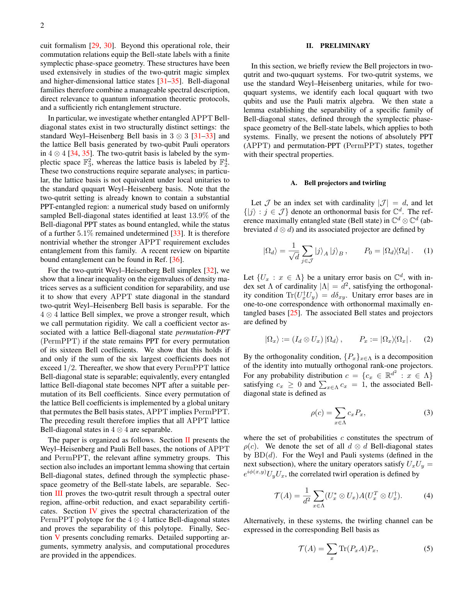
<figcaption class="paper-figure-caption"><b>Fig 1.</b> Low-resolution page preview, page 2</figcaption>
</figure>
<figure class="paper-figure-card">
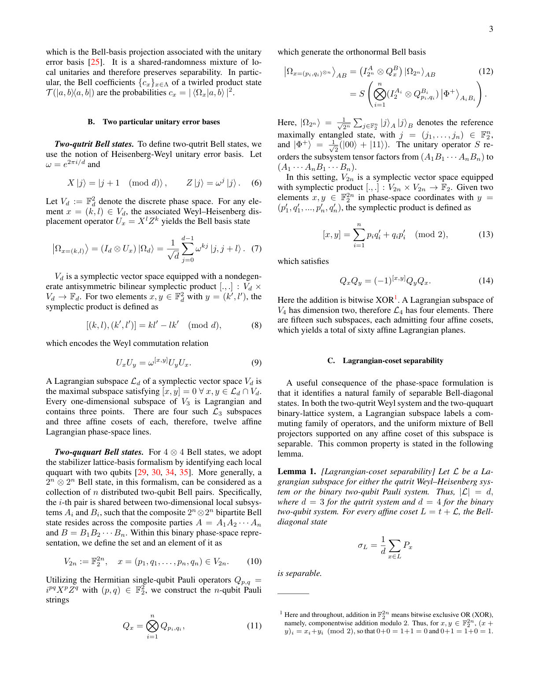
<figcaption class="paper-figure-caption"><b>Fig 2.</b> Low-resolution page preview, page 3</figcaption>
</figure>
<figure class="paper-figure-card">
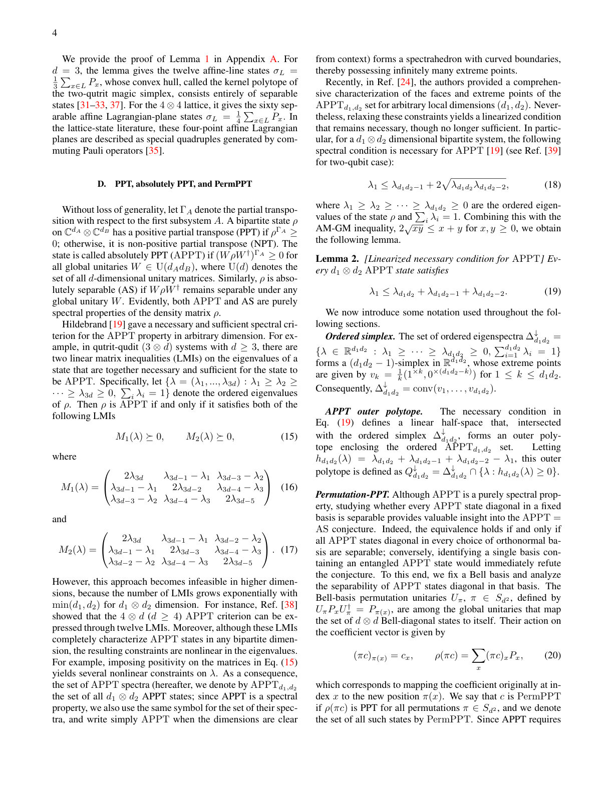
<figcaption class="paper-figure-caption"><b>Fig 3.</b> Low-resolution page preview, page 4</figcaption>
</figure>
<figure class="paper-figure-card">
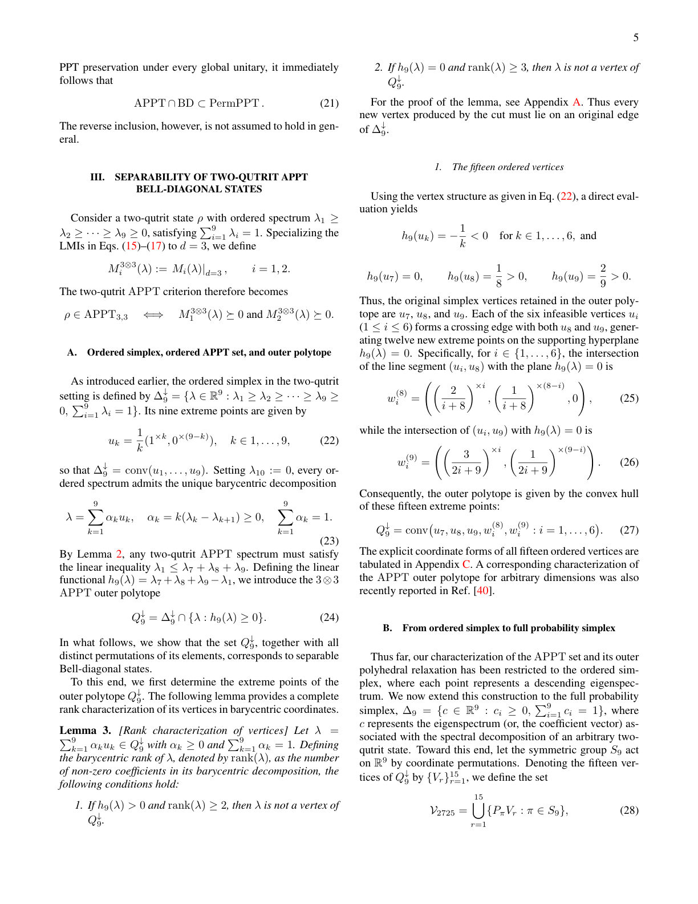
<figcaption class="paper-figure-caption"><b>Fig 4.</b> Low-resolution page preview, page 5</figcaption>
</figure>
<figure class="paper-figure-card">
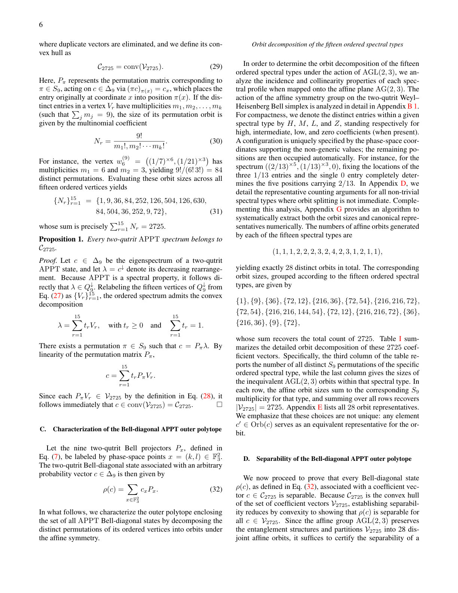
<figcaption class="paper-figure-caption"><b>Fig 5.</b> Low-resolution page preview, page 6</figcaption>
</figure>
</div>
<p><strong>Summary.</strong> This paper tackles the difficult problem of distinguishing between APPT states and truly absolutely separable states in higher-dimensional quantum systems. By analyzing Bell-diagonal states in $3 \otimes 3$ and $4 \otimes 4$ settings, the authors derive strong, sufficient spectral conditions for separability. These results provide significant progress toward characterizing entanglement in structured quantum states.</p>
<p><strong>Why it may be interesting.</strong> It provides rigorous, concrete criteria for separability in structured quantum states, which is fundamental for understanding entanglement detection in multi-level systems beyond simple qubit models.</p>
<details>
<summary>Detailed structure</summary>
<p><strong>Main problem.</strong> The paper investigates whether the physical notion of Absolutely Positive Partial Transpose (APPT) states coincides with the notion of absolutely separable states for higher-dimensional quantum systems.</p>
<p><strong>Main result.</strong> The authors prove that for Bell-diagonal states in two specific settings (two-qutrit and two-ququart), entangled APPT states are ruled out, providing simple spectral inequalities that are sufficient for separability.</p>
<p><strong>Method.</strong> The analysis combines convex-polytope analysis, affine and symplectic orbit reductions, and exact rational decompositions into separable states.</p>
<p><strong>Model / system.</strong> The study focuses on Bell-diagonal states, which are convex mixtures of Bell states, analyzed in the context of two-qutrit ($3 \otimes 3$) and two-ququart ($4 \otimes 4$) systems.</p>
<p><strong>Key observables.</strong> The Bell coefficients ($\mathbf{c}$) defining the state spectrum, and the criteria for APPT and separability.</p>
<p><strong>Important parameters / regimes.</strong> The dimensions of the subsystems ($d_1, d_2 \ge 3$), and the spectral constraints derived from the APPT condition.</p>
<p><strong>Assumptions / limitations.</strong> The derived criteria are basis-specific and do not settle the general equivalence between APPT and absolute separability for all systems.</p>
<p><strong>Figures summary.</strong> The notes do not describe specific figures, but mention the use of geometric structures, orbit classifications, and spectral analysis.</p>
<p><strong>Paper structure.</strong> The paper progresses by defining the problem (APPT vs. absolute separability), analyzing the two-qutrit case using polytope analysis, examining the two-ququart lattice case using permutation symmetry, and concluding with general spectral criteria.</p>
</details>
<details>
<summary>Abstract</summary>
<p>Absolutely positive partial transpose (APPT) states, which remain PPT under every global unitary, provide a spectral relaxation of absolutely separable states, which remain separable under every such transformation. Despite substantial progress, whether these two notions coincide beyond qubit-qudit systems remains unresolved, motivating the study of structured state families in which the APPT spectral constraints and separability can be analyzed exactly. We study this problem for Bell-diagonal states in two settings: the standard two-qutrit Weyl-Heisenberg basis and the two-ququart lattice basis generated by two-qubit Pauli operators. In the two-qutrit case, we show that a linearized necessary condition for APPT defines a polytope of spectra in which every associated Weyl-Heisenberg Bell-diagonal state admits an exact decomposition into explicitly separable states. This yields a separability criterion that applies to a region even larger than the APPT set itself. In the two-ququart lattice Bell-diagonal setting, we show that a state remains PPT under every permutation of its Bell coefficients if and only if its six largest Bell coefficients sum to at most 1/2, and we prove that all such states are separable. Equivalently, every entangled lattice Bell-diagonal state becomes NPT after a suitable coefficient permutation and is therefore not APPT. The proofs combine convex-polytope analysis, affine and symplectic orbit reductions, and exact rational decompositions into separable states supported on affine Lagrangian subsets. Our results rule out entangled APPT states in both Bell-diagonal families, and provide simple spectral inequalities as sufficient criteria for separability in both cases. Being basis-specific, however, they do not by themselves settle whether APPT and absolute separability coincide.</p>
</details>
<p><sub><a href="#top">↑ back to top</a></sub></p>

<p><a id="paper-2610.12193"></a></p>
<h3 id="orbital-magnetic-susceptibility-and-de-haas-van-alphen-effect-of-a-flat-band-from-quantum-geometry"><a href="http://arxiv.org/abs/2610.12193v1">Orbital magnetic susceptibility and de Haas-van Alphen effect of a flat band from quantum geometry</a></h3>
<p><strong>Authors:</strong> Ethan Huecker, Mengxing Ye, Yuxuan Wang<br>
<strong>Type:</strong> theory · <strong>Category:</strong> other · <strong>PDF:</strong> <a href="https://arxiv.org/pdf/2610.12193v1">https://arxiv.org/pdf/2610.12193v1</a><br>
<strong>Analysis basis:</strong> full PDF text, analyzed in chunks</p>
<div class="figure-strip-hint">↔ Scroll figures horizontally</div>
<div class="paper-figures-scroll">
<figure class="paper-figure-card">
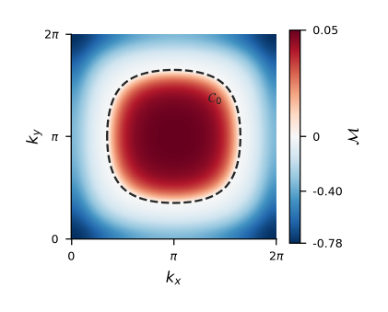
<figcaption class="paper-figure-caption"><b>Fig 1.</b> FIG. 1. The orbital moment M(k) of the lower band at u = −1.2, in the zone chart centered on M = (π, π). The moment is negative at Γ and X, with minimum −0.78 at Γ, and positive inside a single pocket around M, with maximum +0.05. The color scale is linear on each side of zero. Dashed: the zero contour C0, the flat-band Fermi surface of Sec. IV.</figcaption>
</figure>
<figure class="paper-figure-card">

<figcaption class="paper-figure-caption"><b>Fig 2.</b> Figure 2 shows the two structural scalings. The ED bandwidth follows (Mmax −Mmin)B, and the level spacing at µ = ε0 follows the quadratic law of Eq. (58) with the independently computed contour in- tegral H</figcaption>
</figure>
<figure class="paper-figure-card">
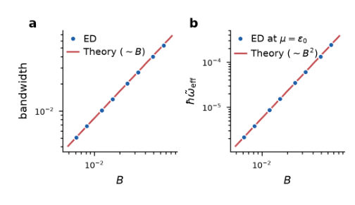
<figcaption class="paper-figure-caption"><b>Fig 3.</b> FIG. 2. Log-log plots for the field-generated band at u = −1.2. (a) ED bandwidth of the flat-band Landau cluster vs B (points) against (Mmax −Mmin)B (line, no fit). (b) ED level spacing at µ = ε0 vs B (points) against ℏ˜ωeff = 2πB2H</figcaption>
</figure>
<figure class="paper-figure-card">
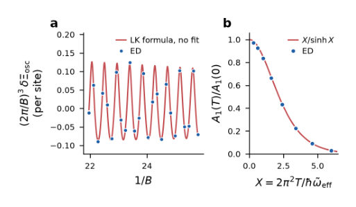
<figcaption class="paper-figure-caption"><b>Fig 4.</b> FIG. 4. dHvA oscillations at u = −1.2. (a) Oscillatory grand potential vs 1/B at pinned µ = ε0 and T = 5 × 10−6: ED points after subtracting a polynomial fit of the smooth part in B, rescaled by (2π/B)3 to cancel the B3 envelope of Eq. (66), against the LK formula with all parameters fixed by geometry and ˜γ = 0.874 (line, no fit). (b) Fundamental amplitude A1 vs T on the in-band contour M = −1</figcaption>
</figure>
<figure class="paper-figure-card">
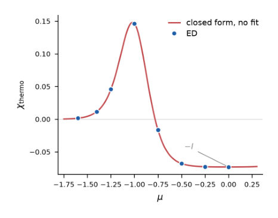
<figcaption class="paper-figure-caption"><b>Fig 5.</b> FIG. 3. Orbital magnetic susceptibility of the flat-band model at u = −1.2, T = 0.1: ED (points; quadratic coefficient of the smooth grand potential, q = 320–1200) against the closed form Eq. (36) (line, no fit). The paramagnetic peak at µ = ε0 is the orbital Curie response of the field-generated moments. The plateau in the gap is the geometric diamag- netism χthermo = −I, with no Fermi surface.</figcaption>
</figure>
</div>
<p><strong>Summary.</strong> This work develops a theory to calculate the orbital magnetic susceptibility and dHvA effect for materials with flat electronic bands, where conventional theories break down. By expanding the Hamiltonian using Moyal algebra, the authors derive a field-dependent dispersion relation that captures the geometric origin of the magnetic response. This framework successfully predicts the characteristic crossover behavior observed in the dHvA oscillations.</p>
<p><strong>Why it may be interesting.</strong> The rigorous derivation of orbital response from geometric properties, especially in the singular limit of flat bands, provides powerful theoretical tools applicable to topological materials and strongly correlated systems.</p>
<details>
<summary>Detailed structure</summary>
<p><strong>Main problem.</strong> The paper addresses the failure of standard orbital magnetism theories when applied to materials exhibiting exactly flat electronic bands, which possess zero velocity and no Fermi surface at zero magnetic field.</p>
<p><strong>Main result.</strong> The magnetic field generates an effective, gauge-invariant dispersion $\epsilon(k; B) = \epsilon_0 + B M(k) + rac{1}{2} X(k) B^2$, allowing the calculation of the orbital susceptibility and dHvA effect via geometric principles.</p>
<p><strong>Method.</strong> The analysis employs an expansion in the Moyal algebra of noncommutative kinetic momenta, calculating energy shifts to second order in the magnetic field $B$.</p>
<p><strong>Model / system.</strong> The system is an isolated flat band, potentially realized in quantum geometry materials, analyzed via the magnetic Bloch problem formulated as a star-eigenvalue problem.</p>
<p><strong>Key observables.</strong> Orbital magnetic susceptibility, de Haas-van Alphen (dHvA) effect frequency, and the field-generated dispersion coefficients $M(k)$ and $X(k)$.</p>
<p><strong>Important parameters / regimes.</strong> The magnetic field $B$, the zero-field energy $\epsilon_0$, and the geometric length scale $\xi$ governing the crossover between different field regimes.</p>
<p><strong>Assumptions / limitations.</strong> The theory assumes the existence of an isolated, non-degenerate flat band and relies on expansions in powers of the magnetic field $B$.</p>
<p><strong>Figures summary.</strong> Figure 5 illustrates the dHvA crossover, showing the measured instantaneous frequency transitioning from a low-field plateau to a high-field $1/B$ law, consistent with the composite contour prediction.</p>
<p><strong>Paper structure.</strong> The paper systematically derives the field-generated dispersion using Moyal expansion, establishes the gauge-invariant nature of the response, and then analyzes the resulting dHvA frequency, detailing the crossover between zero-field and high-field limits.</p>
</details>
<details>
<summary>Abstract</summary>
<p>A band that is exactly flat at zero magnetic field has zero velocity, a divergent effective mass, and no Fermi surface, so the standard theory of orbital magnetism does not apply. We show that the magnetic field generates an effective dispersion. In the expansion organized by the Moyal algebra of the noncommutative kinetic momenta, the band energy acquires a first-order shift $B\,\mathcal{M}(\mathbf k)$, set by the orbital moment of the Bloch state, and a second-order shift $\tfrac12\mathcal{X}(\mathbf k)B^{2}$, whose gauge-invariant coefficient we obtain in closed form. These two functions, together with the Berry curvature $Ω$, fix the entire orbital response. The susceptibility is purely geometric, and for a generic isolated flat band it reproduces the established gauge-invariant response formula. With the chemical potential pinned to the flat band, the $\mathcal{M}=0$ contour becomes an emergent Fermi surface, and bosonizing excitations in its vicinity yields a modified Lifshitz--Kosevich formula with level spacing quadratic in $B$. The phase shift of the oscillations is given jointly by the Berry phase around the emergent Fermi surface and $\mathcal{X}$. When the band is narrow rather than exactly flat, the oscillation frequency crosses over, with a parameter-free profile, from the zero-field Fermi-surface area to the area of the $\mathcal{M}=0$ contour. We verify our analytical findings numerically by exactly diagonalizing a flattened Chern lattice model.</p>
</details>
<p><sub><a href="#top">↑ back to top</a></sub></p>

<p><a id="paper-2610.11710"></a></p>
<h3 id="parameter-dependent-noise-resilience-in-the-quantum-approximate-optimization-algorithm"><a href="http://arxiv.org/abs/2610.11710v1">Parameter-Dependent Noise Resilience in the Quantum Approximate Optimization Algorithm</a></h3>
<p><strong>Authors:</strong> Jorja Kirk, Ashley Montanaro<br>
<strong>Type:</strong> theory · <strong>Category:</strong> quantum information and computing · <strong>PDF:</strong> <a href="https://arxiv.org/pdf/2610.11710v1">https://arxiv.org/pdf/2610.11710v1</a><br>
<strong>Analysis basis:</strong> full PDF text, analyzed in chunks</p>
<div class="figure-strip-hint">↔ Scroll figures horizontally</div>
<div class="paper-figures-scroll">
<figure class="paper-figure-card">
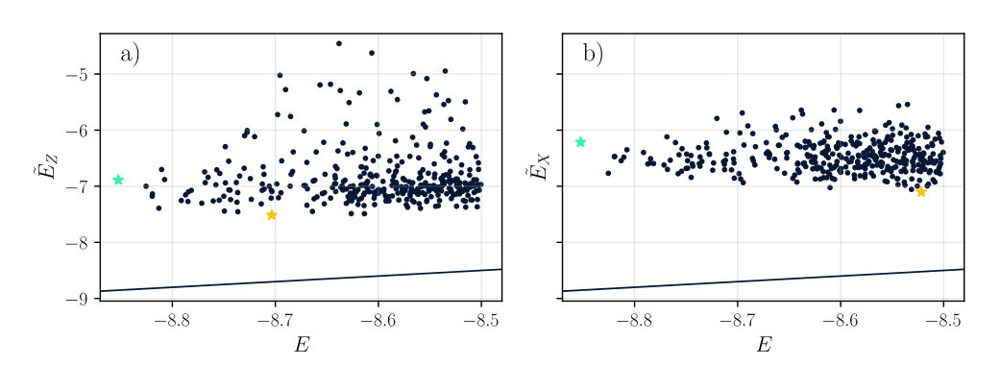
<figcaption class="paper-figure-caption"><b>Fig 1.</b> FIG. 1: Energies obtained by QAOA circuits experiencing one error, compared with exact energies. Each point represents one set of parameters used in 15 layers of QAOA to solve Max-Cut on a line graph with 10 nodes. Each run was done in simulation to return energy E and then also with simulated errors in the circuit. The energy of the noisy circuit ˜EZ or ˜EX was obtained by averaging over the resulting energy with many different error locations of single Pauli Zs or Xs in a) and b) respectively. The highlighted points show the parameters that perform best without errors (teal) and with errors (yellow). The optimal energy for this graph is E = −9 and the solid line indicates where the energy...</figcaption>
</figure>
<figure class="paper-figure-card">
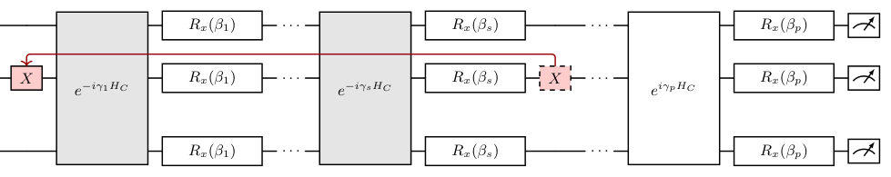
<figcaption class="paper-figure-caption"><b>Fig 2.</b> FIG. 2: QAOA circuit diagram with a single Pauli (a) Z error or (b) X error inserted after layer s. This shows how the errors can be propagated to the end or beginning of the circuit, flipping the signs of the parameters on the non-commuting terms.</figcaption>
</figure>
<figure class="paper-figure-card">
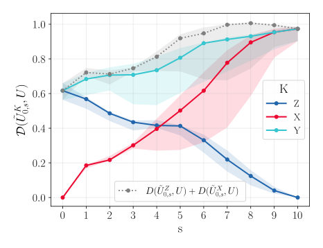
<figcaption class="paper-figure-caption"><b>Fig 3.</b> FIG. 3: Total variation distance, D( ˜U K 0,s, U), for QAOA with 10 layers and a single Pauli K ∈{X, Y, Z} injected after layer s (where s = 0 denotes the position before the first layer). We plot the median distance over 5 3-regular graphs with 10 nodes and the shaded region indicating the interquartile range. For each graph QAOA was run, using predicted parameters using the balanced method from [22], without any errors then with a single Pauli injected and the distance between the distributions calculated using (25). Z errors are most damaging early in the circuit while X errors are most damaging near the end. We also see that D( ˜U X 0,s, U) + D( ˜U Z 0,s, U) closely tracks D( ˜U Y 0,s,...</figcaption>
</figure>
<figure class="paper-figure-card">
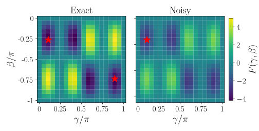
<figcaption class="paper-figure-caption"><b>Fig 4.</b> FIG. 4: Noiseless and Noisy parameter landscape for 1 layer QAOA for Maxcut on 8 node 3-regular graph. Stars indicate global minima.</figcaption>
</figure>
<figure class="paper-figure-card">
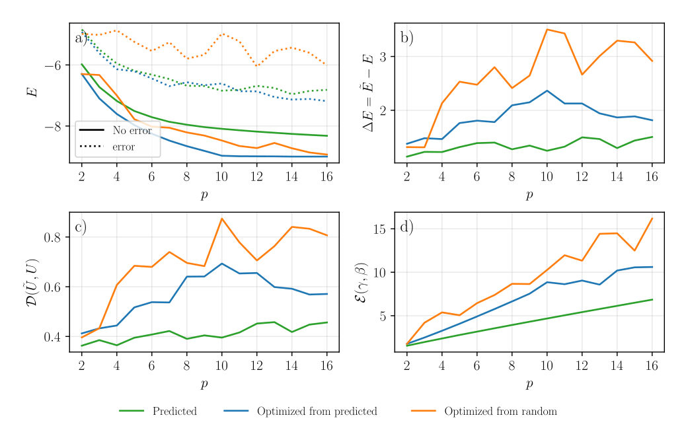
<figcaption class="paper-figure-caption"><b>Fig 5.</b> FIG. 5: a) Noisy and noiseless energy, b) energy difference, c) distance and d) upper bound on expected distance for Max-Cut on a 10 node line graph using 3 different parameter generation methods: predicted using SKatan Method from [22]; optimized starting from the predicted parameters; and optimized from a random starting point. Both optimizations were done offline, in exact simulation using LBFGS [56]. Single Pauli X and Z were injected uniformly at a random layer and random qubit in the circuit and the results were averaged over 200 circuit runs.</figcaption>
</figure>
</div>
<p><strong>Summary.</strong> This work analyzes how noise degrades the performance of the QAOA for optimization problems, finding that algorithm stability critically depends on the chosen variational parameters. The authors derive rigorous upper bounds on the error accumulation using Pauli noise models and propose novel optimization strategies to build error resilience into the algorithm. This research is vital for making variational quantum algorithms practical on noisy intermediate-scale quantum (NISQ) devices.</p>
<p><strong>Why it may be interesting.</strong> The focus on parameter-dependent noise resilience provides concrete, actionable guidelines for designing robust quantum circuits, which is crucial for near-term quantum hardware implementation.</p>
<details>
<summary>Detailed structure</summary>
<p><strong>Main problem.</strong> The paper addresses the critical issue of understanding and suppressing the detrimental effects of noise on the performance of the Quantum Approximate Optimization Algorithm (QAOA) when solving combinatorial optimization problems.</p>
<p><strong>Main result.</strong> The stability of QAOA under noise is shown to be highly dependent on the choice of variational parameters, leading to the derivation of an upper bound on the total variation distance between noisy and noiseless outputs.</p>
<p><strong>Method.</strong> The authors derive theoretical upper bounds on the total variation distance (TVD) using Pauli noise models and propose error resilience techniques like error penalties and parameter space truncation.</p>
<p><strong>Model / system.</strong> The primary model is the QAOA, a variational quantum algorithm applied to optimization problems like Max-Cut. The analysis uses a Pauli noise model and extends concepts to the Quantum Adiabatic Algorithm (QAA).</p>
<p><strong>Key observables.</strong> Total variation distance (TVD) between noisy and noiseless circuit outputs, and the energy values obtained from noisy vs. noiseless simulations.</p>
<p><strong>Important parameters / regimes.</strong> Variational parameters ($\gamma, eta$), noise strength, and the number of QAOA layers ($p$).</p>
<p><strong>Assumptions / limitations.</strong> The analysis relies on a Pauli noise model and uses approximations for error propagation and the continuous limit when extending to QAA.</p>
<p><strong>Figures summary.</strong> Figures illustrate energy comparisons for Max-Cut under noise, and later figures compare noisy approximation ratios for different parameter optimization methods.</p>
<p><strong>Paper structure.</strong> The paper first establishes the QAOA framework and the noise problem, then derives the TVD bound based on Pauli error propagation. It introduces error mitigation techniques and extends the analysis to the QAA, concluding with detailed mathematical derivations for the error bounds.</p>
</details>
<details>
<summary>Abstract</summary>
<p>The Quantum Approximate Optimization Algorithm (QAOA) is a variational quantum algorithm used for solving combinatorial optimization problems, which is thought to be a promising application of near-term quantum hardware. However, high rates of noise in these devices can obscure meaningful results. Therefore, it is crucial to understand and suppress the effects of noise on the algorithm's output. Here, we find that the stability of the algorithm in the presence of noise is dependent on its variational parameters. Using a Pauli noise model, we derive an upper bound on the total variation distance between the noisy and noiseless circuit output as a function of these parameters. Results from noisy simulations support this bound and give insight into the best methods to use for parameter generation in the presence of noise. We also introduce new methods of optimization using error penalties and truncated search based on this bound to manufacture error resilience. We extend this analysis to the quantum adiabatic algorithm (QAA) by taking the continuous limit of the QAOA.</p>
</details>
<p><sub><a href="#top">↑ back to top</a></sub></p>

<p><a id="paper-2610.12257"></a></p>
<h3 id="pressure-induced-double-dome-superconductivity-in-doped-kagome-metal-csv086ta0143sb5-without-charge-density-wave"><a href="http://arxiv.org/abs/2610.12257v1">Pressure-induced double-dome superconductivity in doped kagome metal Cs(V0.86Ta0.14)3Sb5 without charge density wave</a></h3>
<p><strong>Authors:</strong> Haochen Sun, Jing Wang, Deng Hu, Zhiwei Wang, Shiyan Li<br>
<strong>Type:</strong> experiment · <strong>Category:</strong> strongly correlated electrons · <strong>PDF:</strong> <a href="https://arxiv.org/pdf/2610.12257v1">https://arxiv.org/pdf/2610.12257v1</a><br>
<strong>Analysis basis:</strong> full PDF text, analyzed in chunks</p>
<div class="figure-strip-hint">↔ Scroll figures horizontally</div>
<div class="paper-figures-scroll">
<figure class="paper-figure-card">
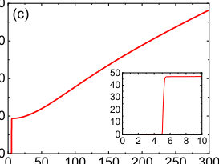
<figcaption class="paper-figure-caption"><b>Fig 1.</b> FIG. 1. (a) Crystal structure of Cs(V0.86Ta0.14)3Sb5. The V/Ta atoms form layers with an ideal kagome lattice. (b) DC magnetization of Cs(V0.86Ta0.14)3Sb5 single crystal at low temperatures, with zero-field and field cooling modes. (c) In-plane resistivity of Cs(V0.86Ta0.14)3Sb5 single crystal at ambient pressure. Inset shows the low-temperature superconducting transition.</figcaption>
</figure>
<figure class="paper-figure-card">
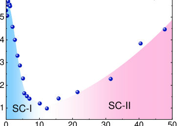
<figcaption class="paper-figure-caption"><b>Fig 2.</b> FIG. 4. Temperature-pressure phase diagram of Cs(V0.86Ta0.14)3Sb5. Two superconducting domes are shown clearly, with SC-I phase at lower pressures and SC-II phase at higher pressures.</figcaption>
</figure>
</div>
<p><strong>Summary.</strong> This work reports on high-pressure studies of the doped kagome superconductor Cs(V0.86Ta0.14)3Sb5, which lacks long-range CDW order. The key finding is the observation of a double-dome superconducting phase diagram under pressure. This demonstrates that the double-dome superconductivity is an intrinsic property of this class of materials, independent of the CDW state.</p>
<p><strong>Why it may be interesting.</strong> The study provides experimental evidence of unconventional superconductivity mechanisms (double-dome structure) in a strongly correlated system, offering insights into how electronic instabilities (like CDW) influence pairing symmetry and dome formation.</p>
<details>
<summary>Detailed structure</summary>
<p><strong>Main problem.</strong> The study investigates the persistence and nature of pressure-induced double-dome superconductivity in a doped kagome metal, specifically when the long-range Charge Density Wave (CDW) order is suppressed.</p>
<p><strong>Main result.</strong> The Ta-doped compound exhibits a clear double-dome superconducting phase diagram under pressure, demonstrating that this feature is intrinsic to V-based kagome superconductors even without CDW order.</p>
<p><strong>Method.</strong> High-pressure electrical resistance measurements were performed up to 48 GPa using a diamond anvil cell, complemented by magnetization measurements.</p>
<p><strong>Model / system.</strong> The physical system is the vanadium-based kagome superconductor Cs(V0.86Ta0.14)3Sb5. The research explores the interplay between superconductivity and charge order in this highly correlated electronic material.</p>
<p><strong>Key observables.</strong> Superconducting transition temperature ($T_c$), $T-P$ phase diagram, and the presence/absence of CDW resistivity anomalies.</p>
<p><strong>Important parameters / regimes.</strong> Pressure range up to 48 GPa; doping level (Ta substitution for V); ambient pressure $T_c$ ($\approx 5.29 	ext{ K}$).</p>
<p><strong>Assumptions / limitations.</strong> The authors hypothesize that the second superconducting dome is driven by a pressure-induced Fermi surface Lifshitz transition.</p>
<p><strong>Figures summary.</strong> Figures illustrate the non-monotonic evolution of $T_c$ under pressure, clearly establishing the double-dome structure up to 47.7 GPa, while confirming the absence of a CDW anomaly.</p>
<p><strong>Paper structure.</strong> The paper presents measurements showing the initial non-monotonic $T_c$ evolution at low pressure, followed by the demonstration of the high-pressure double-dome superconductivity, concluding that this feature is robust despite CDW suppression.</p>
</details>
<details>
<summary>Abstract</summary>
<p>The vanadium-based kagome superconductor CsV$_3$Sb$_5$ exhibits an intricate interplay between charge density wave (CDW) and superconductivity (SC). Substituting Ta for V will suppress the CDW order and enhance superconductivity. Here, we report a high-pressure study up to 48 GPa on Ta-doped Cs(V$_{0.86}$Ta$_{0.14}$)$_3$Sb$_5$ with enhanced $T_\mathrm{c}$ around 5.29 K and without CDW order. At low pressures, unlike the characteristic $``$M-shaped" temperature-pressure phase diagram of the pristine CsV$_3$Sb$_5$, the Ta-doped compound exhibits a distinct non-monotonic evolution. Initially, $T_\mathrm{c}$ drops slightly from 5.29 K at ambient pressure to 4.90 K at 0.33 GPa, before increasing to a maximum of 5.70 K at 0.61 GPa. Upon further compression, $T_\mathrm{c}$ decreases continuously to 0.98 K at 12.3 GPa. At higher pressures, $T_\mathrm{c}$ rises again, reaching 4.46 K at 47.7 GPa. This evolution of $T_\mathrm{c}$ establishes two superconducting domes under pressure, which are similar to those in CsV$_3$Sb$_5$. Our results demonstrate that pressure-induced double-dome superconductivity is intrinsic to these V-based kagome superconductors, even in the absence of long-range CDW order.</p>
</details>
<p><sub><a href="#top">↑ back to top</a></sub></p>

<p><a id="paper-2610.11261"></a></p>
<h3 id="q-capsule-a-localized-capsule-based-quantum-neural-architecture-for-barren-plateau-mitigation"><a href="http://arxiv.org/abs/2610.11261v1">Q-Capsule: A Localized Capsule-Based Quantum Neural Architecture for Barren Plateau Mitigation</a></h3>
<p><strong>Authors:</strong> Awal Ahmed Fime, Tasfia Zaman Samiha, Saika Zaman, Dimitris Pados, George Sklivanitis, Abdur R. Shahid, Ahmed Imteaj<br>
<strong>Type:</strong> theory · <strong>Category:</strong> quantum information and computing · <strong>PDF:</strong> <a href="https://arxiv.org/pdf/2610.11261v1">https://arxiv.org/pdf/2610.11261v1</a><br>
<strong>Analysis basis:</strong> full PDF text, analyzed in chunks</p>
<div class="figure-strip-hint">↔ Scroll figures horizontally</div>
<div class="paper-figures-scroll">
<figure class="paper-figure-card">
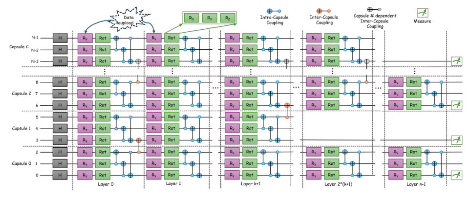
<figcaption class="paper-figure-caption"><b>Fig 1.</b> Figure 1: Overview of the Q-Capsule architecture. N denotes the total number of qubits, c the capsule index, csize the number of qubits per capsule, and Nc = N/csize the total number of capsules. k denotes the inter-capsule coupling interval. H is the Hadamard gate, Ry performs trainable data re-uploading, and Rot denotes a general trainable single-qubit rotation composed of Rx, Ry, and Rz. Blue control–target symbols denote intra-capsule CNOTs, orange symbols denote sparse inter-capsule CNOTs, gray symbols indicate capsule-dependent coupling determined by the alternating coupling pattern, and the green meter symbol denotes local capsule-wise measurement. Different capsule lengths...</figcaption>
</figure>
<figure class="paper-figure-card">
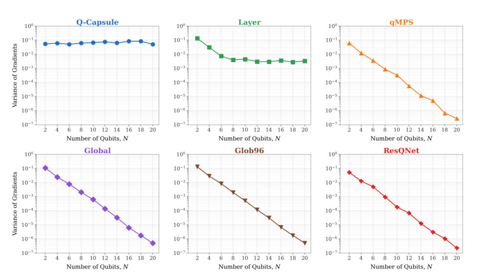
<figcaption class="paper-figure-caption"><b>Fig 2.</b> Figure 2: Gradient variance versus register width N at fixed depth, for Q-Capsule and the five baselines (log scale).</figcaption>
</figure>
<figure class="paper-figure-card">
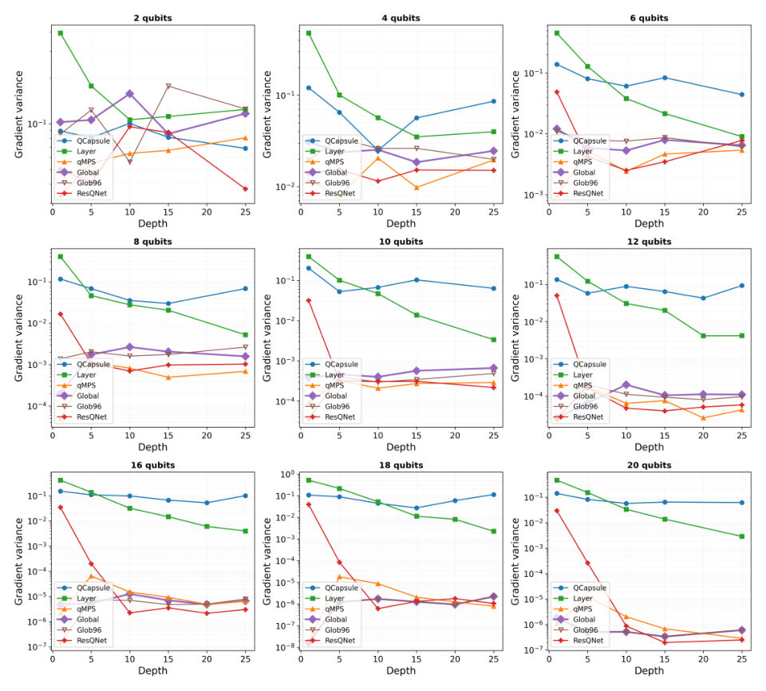
<figcaption class="paper-figure-caption"><b>Fig 3.</b> Figure 3: Gradient variance versus depth for each register width (log scale). Q-Capsule remains within an O(10−1) band across all depths.</figcaption>
</figure>
<figure class="paper-figure-card">
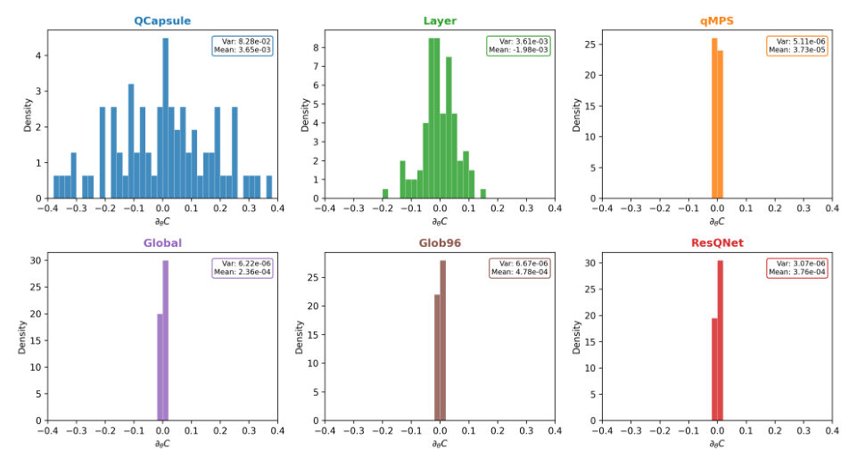
<figcaption class="paper-figure-caption"><b>Fig 4.</b> Figure 4: Empirical gradient distributions at N = 16, max depth 25, over random initializations, with per-model variance and mean annotated.</figcaption>
</figure>
<figure class="paper-figure-card">
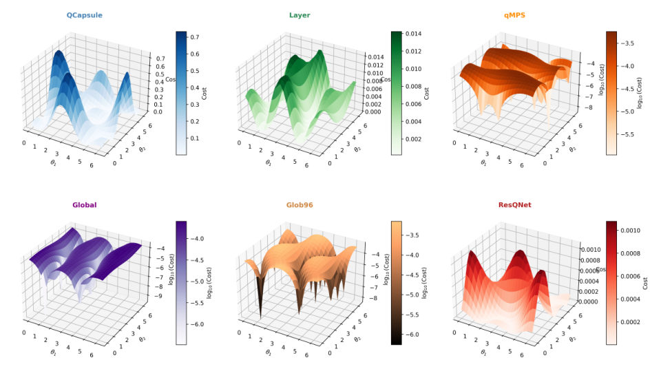
<figcaption class="paper-figure-caption"><b>Fig 5.</b> Figure 5: Two-parameter cost-landscape slices (θ1, θ2) at fixed remaining parameters. Q-Capsule (linear colour scale) shows structured minima spanning a cost range ≈0.75.</figcaption>
</figure>
</div>
<p><strong>Summary.</strong> This paper introduces Q-Capsule, a novel quantum neural network architecture designed to overcome the barren plateau problem plaguing VQAs. It achieves this by localizing quantum computations into interconnected 'capsules' and adaptively controlling circuit depth using the QFIM. The resulting model maintains stable gradient signals while achieving high classification accuracy with significantly fewer required quantum gates.</p>
<p><strong>Why it may be interesting.</strong> The focus on gradient stability and structured local computation directly addresses fundamental limitations in scaling quantum machine learning models, which is crucial for developing practical quantum algorithms.</p>
<details>
<summary>Detailed structure</summary>
<p><strong>Main problem.</strong> Variational Quantum Algorithms (VQAs) are severely limited by the barren plateau phenomenon, where gradients vanish exponentially as the quantum circuit size or depth increases, making training difficult.</p>
<p><strong>Main result.</strong> Q-Capsule mitigates barren plateaus by using localized capsule structures and sparse coupling, maintaining stable gradient variance even as the total number of qubits increases.</p>
<p><strong>Method.</strong> The authors propose Q-Capsule, a localized capsule-based quantum neural architecture that employs register partitioning, local readout, and Quantum Fisher Information Matrix (QFIM)-guided adaptive depth growth.</p>
<p><strong>Model / system.</strong> The model is a Quantum Neural Network (QNN) implemented via VQAs on a quantum register. It partitions the register into fixed-width 'capsules' which process information locally before sparsely interacting.</p>
<p><strong>Key observables.</strong> Gradient variance ($   ext{Var}[\partial   heta\langle O_c
angle]$), Quantum Fisher Information Matrix (QFIM), inter-capsule entanglement, and classification accuracy.</p>
<p><strong>Important parameters / regimes.</strong> Capsule width ($c_{size}$), coupling interval ($k$), and the QFIM-derived expressibility score ($S_c$).</p>
<p><strong>Assumptions / limitations.</strong> The analysis relies on the assumption that restricting observables to small capsules controls gradient concentration, and the adaptive growth uses a block-diagonal metric-tensor approximation of the QFIM.</p>
<p><strong>Figures summary.</strong> Figure 1 provides an architectural overview, detailing the qubit partitioning, local readout mechanisms, and the pattern of intra-capsule and inter-capsule coupling.</p>
<p><strong>Paper structure.</strong> The paper introduces the Q-Capsule architecture, presents detailed analysis of its mechanisms (including QFIM guidance), and concludes with performance metrics and future work directions.</p>
</details>
<details>
<summary>Abstract</summary>
<p>Variational quantum algorithms are often limited by barren plateaus: gradients vanish as circuit size and depth increase, making quantum neural networks difficult to train. We propose Q-Capsule, a localized capsule-based quantum neural architecture that mitigates this problem through register partitioning, local readout, sparse inter-capsule coupling, trainable data re-uploading, and Quantum Fisher Information Matrix (QFIM)-guided adaptive depth growth. By restricting the dominant support of each observable to a small capsule and controlling inter-capsule entanglement, Q-Capsule preserves useful gradient signals while retaining communication between local quantum representations. As the register width increases, Q-Capsule consistently maintains stable gradient variance, whereas globally entangling baselines exhibit exponential suppression with a log-gradient-variance slope near -ln 2 per qubit. Q-Capsule also produces more structured optimization landscapes, higher parameter efficiency, improved robustness to depolarizing noise, and lower measurement requirements. Its adaptive policy achieves 98.1% accuracy on binary classification and 97.7% on four-class classification, while using approximately 73% fewer two-qubit gates than the fixed-deep model on the multiclass task.</p>
</details>
<p><sub><a href="#top">↑ back to top</a></sub></p>

<p><a id="paper-2610.12334"></a></p>
<h3 id="quantum-co-design-of-inhomogeneous-many-body-neutrino-fast-flavor-transformation"><a href="http://arxiv.org/abs/2610.12334v1">Quantum Co-Design of Inhomogeneous Many-Body Neutrino Fast Flavor Transformation</a></h3>
<p><strong>Authors:</strong> Zoha Laraib, Sherwood Richers, Alessandro Baroni, Kathleen Hamilton, In-Saeng Suh<br>
<strong>Type:</strong> theory · <strong>Category:</strong> quantum information and computing · <strong>PDF:</strong> <a href="https://arxiv.org/pdf/2610.12334v1">https://arxiv.org/pdf/2610.12334v1</a><br>
<strong>Analysis basis:</strong> full PDF text, analyzed in chunks</p>
<div class="figure-strip-hint">↔ Scroll figures horizontally</div>
<div class="paper-figures-scroll">
<figure class="paper-figure-card">
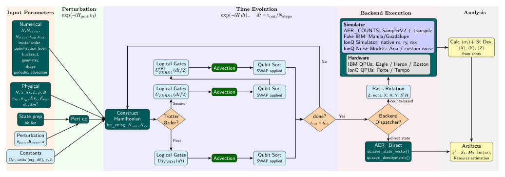
<figcaption class="paper-figure-caption"><b>Fig 1.</b> FIG. 1: QCNO code framework workflow showing the full pipeline for a test. From parameter initialization to applying perturbation, time evolution via Hamiltonian construction and gate application, backend execution across simulators and quantum hardware, measurement processing, statistical analysis, and PDF artifact archiving. Particle sorting based on positions is applied in every layer (showed by colored background).</figcaption>
</figure>
<figure class="paper-figure-card">
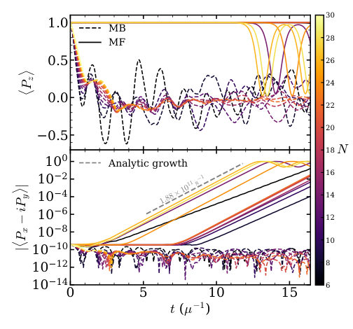
<figcaption class="paper-figure-caption"><b>Fig 2.</b> FIG. 2: System-size dependence of the spatially inhomogeneous two-beam dynamics for 𝑁= 6–30, with 𝑁/2 particles initially in each flavor beam. The upper panel shows the electron-beam-averaged longitudinal polarization ⟨𝑃𝑧⟩, and the lower panel shows the beam-averaged transverse one-body coherence ⟨𝑃𝑥−𝑖𝑃𝑦⟩ . Colors denote 𝑁. Solid curves show MF evolution and dashed curves show fully correlated MB evolution from direct Qiskit Aer statevector calculations. Both use the same second-order product formula with 𝑑𝑡= 5 × 10−13 s = 0.047𝜇−1. The gray dashed line gives the analytic linear-stability growth rate 1.88 × 1011 s−1, with arbitrary vertical offset. The MF calculation develops exponential...</figcaption>
</figure>
<figure class="paper-figure-card">

<figcaption class="paper-figure-caption"><b>Fig 3.</b> Figure 2 verifies the MF (solid) curves; the fastest un- stable mode is picked up through the applied perturba- tion amplitude of 10−2 in the transverse |⟨𝑃𝑥−𝑖𝑃𝑦⟩| which exponentially grows showing the Fast Flavor Instability (FFI). Across these system sizes curves are nearly paral- lel and approach the analytic linear-stability growth rate Im(Ω) = 2𝜇= 1.88 × 1011 s−1 [72, 73]. Its correspond- ing ⟨𝜌𝑒𝑒⟩transitions from 1 to 0.5 (⟨𝑃𝑧⟩from 1 to 0), indicating flavor transformation to a mix of electron and</figcaption>
</figure>
<figure class="paper-figure-card">
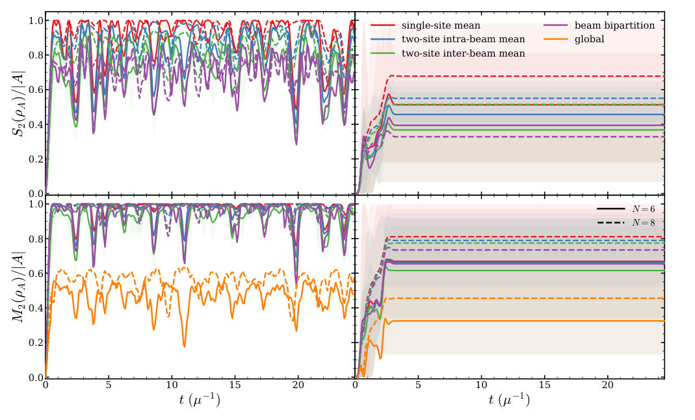
<figcaption class="paper-figure-caption"><b>Fig 4.</b> FIG. 3: Subsystem-size-normalized second Rényi entropy and stabilizer Rényi diagnostics for the inhomogeneous MB evolution with closed periodic boundaries (left column) and open boundaries (right column). The upper row shows 𝑆2(𝜌𝐴)/|𝐴| and the lower row shows 𝑀2(𝜌𝐴)/|𝐴| for 𝑁= 6 (solid) and 𝑁= 8 (dashed). Single-site and two-site curves show averages over the corresponding sites or pairs, with shaded regions giving their minimum-to-maximum spread. Two-site subsystems are separated into intra-beam and inter-beam pairs. The beam bipartition contains all particles belonging to one initial flavor beam, while the global 𝑀2/𝑁is evaluated on the full pure state. Closed boundaries produce rapid...</figcaption>
</figure>
<figure class="paper-figure-card">
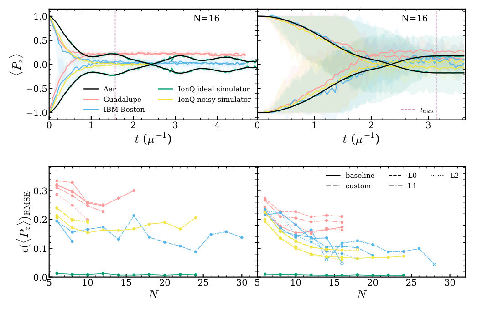
<figcaption class="paper-figure-caption"><b>Fig 5.</b> FIG. 4: Backend sensitivity of the inhomogeneous MB longitudinal polarization for closed boundaries (left column) and open boundaries (right column). The upper panels show the two beam-averaged ⟨𝑃𝑧⟩trajectories at 𝑁= 16, the largest common system size used here for the comparison including Guadalupe. Shaded regions give the site-wise minimum-to-maximum spread within each beam, while solid lines show beam averages. The vertical (purple) dashed lines mark the time taken for beams to separate in the first pass, i.e., 𝑡transient = 𝑡lap ≃1.57 𝜇−1 for closed boundaries and 𝑡transient = 2𝑡lap ≃3.14 𝜇−1 for open boundaries. The lower panels show 𝜖(⟨𝑃𝑧⟩)RMSE relative to direct Aer as 𝑁 is increased....</figcaption>
</figure>
</div>
<p><strong>Summary.</strong> This work introduces QCNO, a quantum simulation code designed to tackle the complex, many-body problem of neutrino flavor transformation in dense astrophysical environments. By mapping the Hamiltonian to quantum circuits, the authors simulate the system's evolution and quantify the computational resources—including required logical error rates—needed to achieve accurate results. This establishes a critical co-design pathway between advanced quantum algorithms and cutting-edge particle astrophysics.</p>
<p><strong>Why it may be interesting.</strong> It provides a concrete, application-driven framework for quantum simulation, directly linking a complex astrophysical many-body problem to the required gate counts and error correction overheads for near-term and fault-tolerant quantum computers.</p>
<details>
<summary>Detailed structure</summary>
<p><strong>Main problem.</strong> The paper addresses the challenge of simulating dense-neutrino flavor evolution, a quantum many-body problem, which becomes computationally prohibitive due to increasing particle number and spatial inhomogeneity.</p>
<p><strong>Main result.</strong> They developed the QCNO code, successfully simulating the many-body evolution for N=30 and estimating resource requirements up to N=50, while quantifying the necessary error tolerance for fault-tolerant execution.</p>
<p><strong>Method.</strong> The core method involves mapping the inhomogeneous neutrino Hamiltonian to TEBD2 product-formula quantum circuits, enabling simulation via Trotter time-slicing on quantum hardware architectures.</p>
<p><strong>Model / system.</strong> The system is neutrino flavor evolution in dense, inhomogeneous fields, modeled by an inhomogeneous forward-scattering Hamiltonian incorporating advection and finite-range interactions. The simulation uses a two-flavor approximation mapped to qubits.</p>
<p><strong>Key observables.</strong> Rényi entanglement, polarization RMSEs, circuit depth, and T gate cost.</p>
<p><strong>Important parameters / regimes.</strong> System size N (up to 50), required synthesis tolerance $\varepsilon_{\text{syn}} \sim 10^{-7}$, and the number of qubits.</p>
<p><strong>Assumptions / limitations.</strong> The analysis relies on mapping the physical problem to quantum circuits and estimating resource costs for both NISQ and fault-tolerant regimes.</p>
<p><strong>Figures summary.</strong> Not specified.</p>
<p><strong>Paper structure.</strong> The paper details the development of the QCNO code, showing the mapping of the Hamiltonian to TEBD2 circuits, demonstrating the simulation of flavor instabilities, and finally estimating the resource scaling for fault-tolerant computation.</p>
</details>
<details>
<summary>Abstract</summary>
<p>Dense-neutrino flavor evolution is a quantum many-body problem whose fully correlated treatment becomes rapidly more expensive with increasing particle number and spatial structure. We develop a \texttt{QCNO} quantum simulation code that maps a inhomogeneous forward-scattering neutrino Hamiltonian with advection and finite-range interactions to TEBD2 product-formula quantum circuits, and connects ideal many-body simulation, backend-aware execution, and fault-tolerant resource estimation within the same physical model. We reproduce the exact many-body evolution of the suppressed mean-field-like transverse fast flavor instability through $N=30$ and show that even a single open-boundary interaction generates Rënyi entanglement and non-stabilizer magic, although noisy backends still produce polarization RMSEs of order $0.1$--$0.3$. The restricted active interaction graph of this problem allows us to estimate the circuit depth and $T$ gate cost through $N=50$ for both NISQ and fault-tolerant approaches. The measured TEBD2 error in our fiducial ideal simulation of order $10^{-3}$ motivates a synthesis tolerance $\varepsilon_{\rm syn}\sim10^{-7}$, corresponding to about $70$ $T$ gates per $R_Z$ rotation. The generated circuit contains $1.4\times10^4$ $T$ gates per qubit for open boundaries (twice that for closed boundaries), requiring an application-level logical-$T$ error target of order $10^{-7}$ for early fault-tolerant architectures.</p>
</details>
<p><sub><a href="#top">↑ back to top</a></sub></p>

<p><a id="paper-2610.10940"></a></p>
<h3 id="quantum-geometry-at-arbitrary-genus-i-anharmonic-potentials"><a href="http://arxiv.org/abs/2610.10940v1">Quantum geometry at arbitrary genus - I: Anharmonic potentials</a></h3>
<p><strong>Authors:</strong> Mustafa Türe, Mithat Ünsal<br>
<strong>Type:</strong> theory · <strong>Category:</strong> other · <strong>PDF:</strong> <a href="https://arxiv.org/pdf/2610.10940v1">https://arxiv.org/pdf/2610.10940v1</a><br>
<strong>Analysis basis:</strong> full PDF text, analyzed in chunks</p>
<div class="figure-strip-hint">↔ Scroll figures horizontally</div>
<div class="paper-figures-scroll">
<figure class="paper-figure-card">
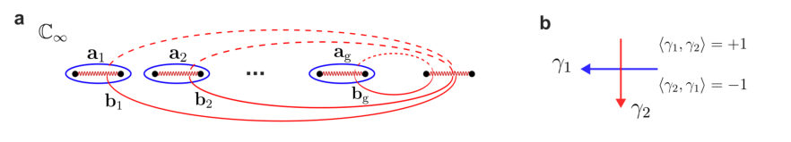
<figcaption class="paper-figure-caption"><b>Fig 1.</b> Figure 1. Canonical basis cycles and intersection numbers. a, A choice for a set of canonical basis cycles {(ai, bi)}g i=1 of a Riemann surface of genus g. The squiggly dark red lines indicate the branch cuts emanating from pairs of branch points, and the dashed segments of cycles indicate they lie on the second sheet. This basis set is equivalent to any other choice of canonical basis set up to an Sp(2g, Z) transformation. b, The intersection number structure of two cycles γ1 and γ2. The homology space is endowed with the inner product shown, which gives the space its symplectic structure defined by the intersection matrix (2.6).</figcaption>
</figure>
<figure class="paper-figure-card">
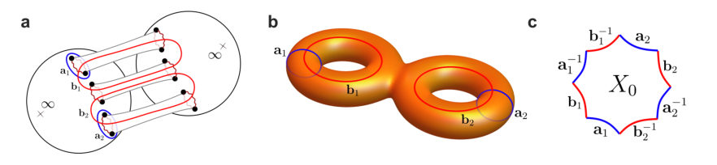
<figcaption class="paper-figure-caption"><b>Fig 2.</b> Figure 2. A genus 2 Riemann surface p2 = f(q) and its geometric and topological rep- resentations. a, The gluing of two compactified complex planes C∞from their branch cuts which gives the compact Riemann surface X. A set of canonical basis cycles {(ai, bi)}2 i=1 is represented on it by the blue and red loops. The squiggly dark red lines represent the branch cuts where the two surfaces are glued. b, A torus, T 2, of genus 2 which is homeomorphic to the Riemann surface X. Same canonical basis cycles are shown as in a. c, The canonical dissection of the Riemann surface X using the canonical basis pairs. X0 is the interior of the Riemann surface and The cycles are the boundary ∂X.</figcaption>
</figure>
<figure class="paper-figure-card">
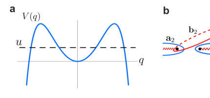
<figcaption class="paper-figure-caption"><b>Fig 3.</b> Figure 3. A genus 2 sextic anharmonic oscillator potential V (q) = 1</figcaption>
</figure>
<figure class="paper-figure-card">
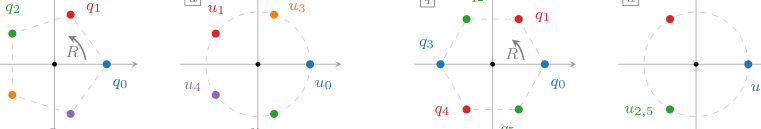
<figcaption class="paper-figure-caption"><b>Fig 4.</b> Figure 4. Critical points qk of V (q) and their critical values uk = u∗ζ2k; the black dot is q = 0, u = 0. Colors follow each point to its image. (a) Septic: u 7→ζ2u visits the five critical values in the order 0, 3, 1, 4, 2 (counterclockwise), and only q0 is real. (b) Octic: the parity pairs ±qk share a critical value, so D6 acts on the u-plane as D3, and q0 and q3 = −q0 are both real.</figcaption>
</figure>
</div>
<p><strong>Summary.</strong> This work tackles the generalization of the P/NP relation in quantum mechanics from simple (genus-1) potentials to complex, higher-genus systems. By employing advanced tools from algebraic geometry and exact WKB theory, the authors overcome a major mathematical obstruction related to the symplectic structure. They successfully derive an all-orders quantum P/NP relation applicable to potentials defining Riemann surfaces of arbitrary genus.</p>
<p><strong>Why it may be interesting.</strong> The rigorous mathematical framework developed for relating quantum periods across arbitrary genus curves is highly relevant to understanding quantum corrections in integrable systems and quantum field theories where geometry plays a central role.</p>
<details>
<summary>Detailed structure</summary>
<p><strong>Main problem.</strong> The paper aims to generalize the P/NP relation, which connects perturbative and non-perturbative quantum actions, from genus-1 potentials to potentials defining Riemann surfaces of arbitrary genus.</p>
<p><strong>Main result.</strong> The authors derive an all-orders quantum P/NP relation valid for arbitrary genus by modifying the Riemann bilinear identity using a suitably transformed intersection matrix.</p>
<p><strong>Method.</strong> The approach combines complex algebraic geometry (Jacobian varieties, Abel-Jacobi map) with the exact WKB formalism applied to the classical energy conservation relation defining a genus-g Riemann surface.</p>
<p><strong>Model / system.</strong> The system is a quantum mechanical particle governed by a potential V(q) such that the classical energy relation p^2 = 2(E-V(q)) defines a hyperelliptic Riemann surface X of genus g. The analysis focuses on anharmonic oscillators for explicit examples.</p>
<p><strong>Key observables.</strong> Quantum periods, WKB-active cycles, and the relationship between the Picard-Fuchs basis and the canonical homology basis.</p>
<p><strong>Important parameters / regimes.</strong> The genus g of the Riemann surface, and the semiclassical parameter $\hbar$.</p>
<p><strong>Assumptions / limitations.</strong> The analysis relies on the existence of a classical energy conservation relation defining the Riemann surface, and the formal structure of the WKB expansion.</p>
<p><strong>Figures summary.</strong> Figure 1 illustrates the canonical basis cycles and their symplectic intersection properties. Figure 2 shows the Riemann surface structure for a genus-2 example, and Figure 3 relates to the potential profile and WKB analysis.</p>
<p><strong>Paper structure.</strong> The paper establishes the general framework by relating quantum periods to the geometry of the Riemann surface. It identifies the obstruction to the P/NP relation at $g \geq 2$ (the mismatch between $ ext{SL}(2g, \mathbb{Z})$ and $  ext{Sp}(2g, \mathbb{Z})$) and resolves it by constructing a modified Riemann bilinear identity, culminating in explicit derivations for $g=2$ and $g=3$.</p>
</details>
<details>
<summary>Abstract</summary>
<p>In quantum mechanics of genus-1 potentials, perturbation theory around the topologically trivial saddle and non-perturbative instanton saddle are constructively related via the P/NP relation. Whether such a relation persists for higher-genus potentials has remained an open problem. In this work, we resolve it using tools from complex algebraic geometry combined with exact WKB. The classical energy conservation relation $p^2 = 2(E-V(q))$ defines a genus-g Riemann surface $X$, whose periods are naturally organized by its Jacobian variety $J(X) = \mathbb{C}^{\text{g}}/Λ$ via the Abel-Jacobi map, and independently by the solution basis of the associated Picard-Fuchs equations. We show that the physically relevant, WKB-active cycles are generally related to the Picard-Fuchs basis by a linear transformation that lies in $\text{SL}(2\text{g},\mathbb{Z})$ but not in the symplectic group $\text{Sp}(2\text{g},\mathbb{Z})$ once $\text{g}\geq2$, in contrast to the genus-1 case, where the two groups coincide. This mismatch is the obstruction that has made an explicit higher-genus P/NP relation elusive. We show that it can be resolved by passing to a modified Riemann bilinear identity, built from a suitably transformed intersection matrix, which the WKB-active periods do satisfy exactly. The result is an all-orders quantum P/NP relation valid for potentials of arbitrary genus, which we derive explicitly for genus-2 (quintic and sextic) and genus-3 (septic and octic) anharmonic oscillators.</p>
</details>
<p><sub><a href="#top">↑ back to top</a></sub></p>

<p><a id="paper-2610.11121"></a></p>
<h3 id="quantum-magic-and-the-strong-coupling-constant"><a href="http://arxiv.org/abs/2610.11121v1">Quantum Magic and the Strong Coupling Constant</a></h3>
<p><strong>Authors:</strong> Qiaofeng Liu, Ian Low, Zhewei Yin<br>
<strong>Type:</strong> theory · <strong>Category:</strong> other · <strong>PDF:</strong> <a href="https://arxiv.org/pdf/2610.11121v1">https://arxiv.org/pdf/2610.11121v1</a><br>
<strong>Analysis basis:</strong> full PDF text, analyzed in chunks</p>
<div class="figure-strip-hint">↔ Scroll figures horizontally</div>
<div class="paper-figures-scroll">
<figure class="paper-figure-card">
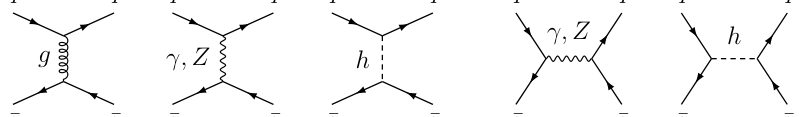
<figcaption class="paper-figure-caption"><b>Fig 1.</b> FIG. 1. Tree diagrams for flavor-diagonal color-singlet q¯q →q¯q scattering. Notice that the s-channel gluon exchange vanishes in the color singlet channel.</figcaption>
</figure>
<figure class="paper-figure-card">
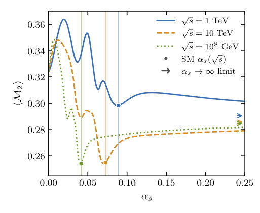
<figcaption class="paper-figure-caption"><b>Fig 2.</b> FIG. 2. Magic production in the t¯t color singlet as a function of αs at √s = 1 TeV, 10 TeV, and 108 GeV, with all other inputs fixed according to Sec. III. Circles and thin vertical lines mark the SM value αs(√s). Arrows at the right edge mark the pure-QCD limit αs →∞.</figcaption>
</figure>
<figure class="paper-figure-card">
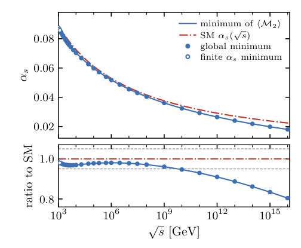
<figcaption class="paper-figure-caption"><b>Fig 3.</b> FIG. 3. Magic-minimizing αs in the t¯t color singlet as a function of √s, compared with the SM running coupling (dash- dotted). Filled circles: global minimum. Open circles: finite αs minimum, as the pure-QCD limit is lower. The lower panel shows the ratio to the SM value; the dashed lines mark ±5%.</figcaption>
</figure>
<figure class="paper-figure-card">

<figcaption class="paper-figure-caption"><b>Fig 4.</b> FIG. 4. Percentage excess δ⟨M2⟩in the t¯t color singlet as a function of the CM energy for mh = 125.20 GeV (filled circles) and mh →∞(open squares). Each curve uses its own minimum over αs, with all other inputs held fixed at each CM energy.</figcaption>
</figure>
<figure class="paper-figure-card">
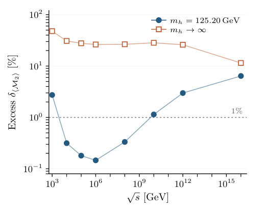
<figcaption class="paper-figure-caption"><b>Fig 5.</b> Figure 2 shows the magic in the t¯t singlet as a function of αs = α rs at √s = 1 TeV, 10 TeV, and 108 GeV. At each CM energy the SM αs(√s) sits very close to the finite αs minimum. At 10 TeV and 108 GeV the finite αs minimum lies below the pure-QCD limit and is therefore the global minimum of Eq. (6). At 1 TeV the finite αs minimum is slightly above the pure-QCD limit, and the magic falls below it only for αs &gt; 0.36, a somewhat large coupling. The additional structures at smaller αs arise from interference among different Feynman diagrams. In Fig. 3 we show the location of the finite αs minimum from 1 TeV to 1016 GeV, together with the SM running coupling. From 1.3 TeV it is the global...</figcaption>
</figure>
</div>
<p><strong>Summary.</strong> This theoretical paper proposes that the fundamental constants of particle physics, particularly the strong coupling $\alpha_s$, are determined by minimizing a quantity called 'magic' in quark scattering processes. By analyzing these minimums across vast energy scales, the authors suggest that this minimization reflects a deeper principle: the universe operates under constraints analogous to quantum computational efficiency.</p>
<p><strong>Why it may be interesting.</strong> While the core physics is high-energy particle theory, the underlying motivation—linking fundamental constants to principles of quantum resource minimization—touches upon deep theoretical concepts relevant to quantum information theory and the foundations of physics.</p>
<details>
<summary>Detailed structure</summary>
<p><strong>Main problem.</strong> The paper investigates whether minimizing a quantity called 'magic' in quark scattering processes can explain the fundamental values and relative strengths of the Standard Model gauge couplings ($\alpha_s$, $\sin^2	heta_W$). It also explores if this principle can constrain the Higgs sector.</p>
<p><strong>Main result.</strong> Varying $\alpha_s$ in the top channel yields a magic minimum that reproduces the running $\alpha_s$ to within $5\%$ across vast energy scales, suggesting a connection between coupling constants and quantum efficiency. The conjecture posits that fundamental constants are selected by minimizing quantum resource costs.</p>
<p><strong>Method.</strong> The authors calculate the 'magic' observable, related to the stabilizer Rényi entropy, for elastic quark scattering at tree level. They perform systematic scans by varying only $\alpha_s$ while keeping other SM inputs fixed.</p>
<p><strong>Model / system.</strong> The model is the Standard Model, focusing on tree-level elastic quark scattering channels ($qar{q} 	o qar{q}$) involving photon, gluon, W/Z, and Higgs exchange. The analysis is performed using renormalization-group-improved methods in the $\overline{	ext{MS}}$ scheme.</p>
<p><strong>Key observables.</strong> The minimum value of the averaged magic, $\langle M_2 
angle_{\min}(\sqrt{s})$, and the deviation $\delta\langle M^2 
angle(\sqrt{s})$ from the Standard Model prediction.</p>
<p><strong>Important parameters / regimes.</strong> The strong coupling constant ($\alpha_s$), the electromagnetic coupling ($\alpha$), the weak mixing angle ($\sin^2	heta_W$), and the center-of-mass energy ($\sqrt{s}$) spanning from $1 	ext{ TeV}$ to $10^{16} 	ext{ GeV}$.</p>
<p><strong>Assumptions / limitations.</strong> The analysis assumes that minimizing 'magic' reflects a principle of quantum computational efficiency, and that the physical universe emerges from a quantum simulation subject to constrained resources.</p>
<p><strong>Figures summary.</strong> Figures illustrate the dependence of the magic observable on $\alpha_s$ for different channels (e.g., $tar{t}$), showing the location of the minimum relative to the SM running coupling. Tables summarize initial input parameters for the couplings and Yukawa couplings.</p>
<p><strong>Paper structure.</strong> The paper establishes the physical context (SM couplings), defines the diagnostic observable ('magic'), performs calculations across various energy scales and channels by varying $\alpha_s$, presents results showing agreement with running couplings, and concludes with a conjecture linking this minimization principle to quantum computational efficiency.</p>
</details>
<details>
<summary>Abstract</summary>
<p>The three gauge couplings of the Standard Model (SM) can be parameterized as the fine structure constant $α$, the weak mixing angle $\sin^2θ_w$, and the strong coupling $α_s$. They are fundamental constants whose values remain unexplained. Previously we showed that minimizing magic production in charged-lepton scattering reproduces $\sin^2θ_w$ with great precision. Here we study magic production in the six flavor-diagonal color-singlet channels $q\bar q\to q\bar q$ at tree level, including photon, gluon, $W/Z$, and Higgs exchange. Varying only $α_s$, with all other inputs fixed at each center-of-mass energy, we find that the finite-$α_s$ magic minimum in the top channel reproduces the $\overline{\mathrm{MS}}$ value of $α_s$ to within $5\%$ from $1~$TeV to $10^9~$GeV. Higgs exchange involving the large top Yukawa coupling is essential for this agreement. All six channels produce near-minimal magic at the SM couplings, and reducing $α_s$ toward $α$ increases their magic production, potentially explaining why the strong interaction is ``strong.'' To understand why minimizing magic reproduces both $\sin^2θ_w$ and $α_s$, we conjecture that the parameters of fundamental interactions among color singlets reflect a principle of quantum computational efficiency, with the physical universe emerging from a quantum simulation subject to constrained resources.</p>
</details>
<p><sub><a href="#top">↑ back to top</a></sub></p>

<p><a id="paper-2610.10756"></a></p>
<h3 id="quantum-enhanced-inference-of-conditional-future-probabilities-with-reduced-memory-cost"><a href="http://arxiv.org/abs/2610.10756v1">Quantum-Enhanced Inference of Conditional Future Probabilities with Reduced Memory Cost</a></h3>
<p><strong>Authors:</strong> Jianjun Chen, Akshat Gupta, Chengran Yang, Ariel Neufeld, Jayne Thompson, Thomas J. Elliott, Mile Gu<br>
<strong>Type:</strong> theory · <strong>Category:</strong> quantum information and computing · <strong>PDF:</strong> <a href="https://arxiv.org/pdf/2610.10756v1">https://arxiv.org/pdf/2610.10756v1</a><br>
<strong>Analysis basis:</strong> full PDF text, analyzed in chunks</p>
<div class="figure-strip-hint">↔ Scroll figures horizontally</div>
<div class="paper-figures-scroll">
<figure class="paper-figure-card">
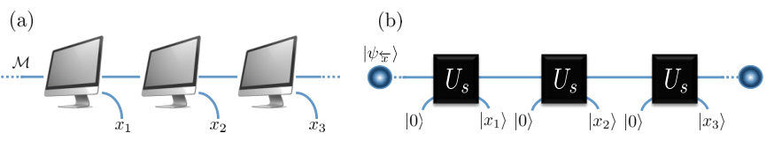
<figcaption class="paper-figure-caption"><b>Fig 1.</b> FIG. 1: Classical vs. Quantum Models. (a) A classical model of a stochastic process operates by tracking relevant past information in its memory states {sj}, encoded within the memory system M. At each time step, a classical model in state sj emits a symbol x and transitions to some state sk with probability T x jk. (b) A quantum model consists of a quantum memory initialised in a state |sj⟩, based on the past observations ←−x . At each time step t, the unitary Us entangles the memory register with a fresh ancillary system, imprinting the output |xt⟩onto the ancilla and simultaneously updating the memory. The output |xt⟩can be measured immediately to generate a sequence for the stochastic...</figcaption>
</figure>
<figure class="paper-figure-card">
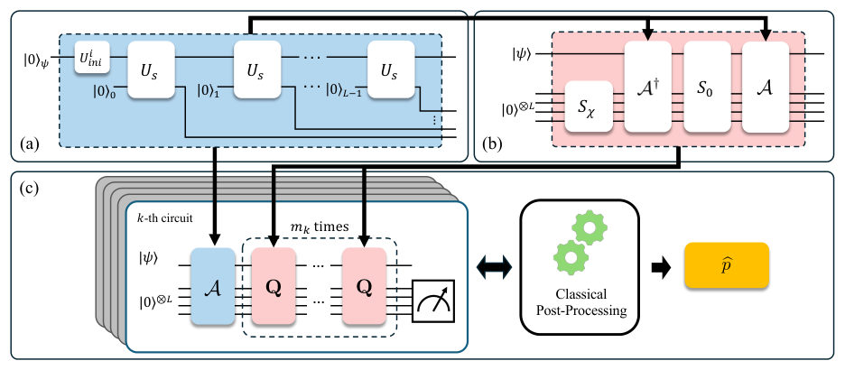
<figcaption class="paper-figure-caption"><b>Fig 2.</b> FIG. 2: Algorithm Schematic. Our method for memory-reduced conditional probability estimation tackles the data-loading problem through the use of a recurrent quantum circuit A (a). Through L repeated applications of Us on a suitably initialised memory system and L ancilla qubits, the circuit is able to generate a quantum superposition of all possible futures up to a time horizon of L. Provided the memory system (top line) is properly accounted for, we can build a suitable Grover iterator Q (b). We can then construct a family of quantum circuits Nk, each involving mk repeated applications of Q. The resulting measurement statistics from these circuits then allow us to estimate ˆp (c). For...</figcaption>
</figure>
<figure class="paper-figure-card">
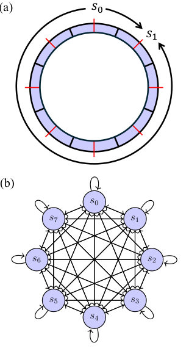
<figcaption class="paper-figure-caption"><b>Fig 3.</b> FIG. 3: Cyclic random walk and its discretisation. (a) We can discretise a cyclic random walk by dividing the unit interval into equal segments, each represented by its midpoint sj = j/N, j = 0, 1, . . . , N −1 (red markers). Between any two states, there exist two possible transition pathways — one clockwise and one anticlockwise. (b) Given a continuous position Xt, the discrete state of the system at time t is defined as the closest segment midpoint sj, denoted St = s(Xt). The transition probability from sk to sj is then P(sk|sj) = P(Xt+1 ∈Ik|Xt = xj), where Ik =  x : x −k</figcaption>
</figure>
<figure class="paper-figure-card">
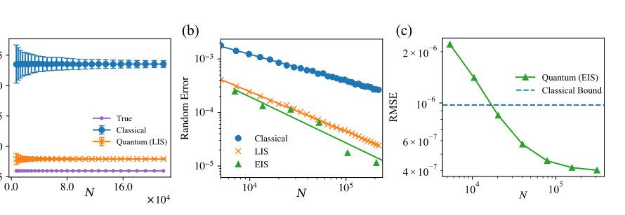
<figcaption class="paper-figure-caption"><b>Fig 4.</b> FIG. 4: Illustration of quantum advantage on a cyclic random walk. Here we compare the performance of classical Monte Carlo methods to our memory-reduced quantum probability estimator (MRQPE) when simulating a 8-segment cyclic random walk when memory dimension is constrained to 4. (a) illustrates the estimates of the probability p = P(x0:3 = 100|x−3:0 = 000) using classical Monte Carlo (blue), MRQPE with linear (LIS) scheduling (see Appendix F for details on LIS and EIS scheduling) as a function of the number of simulations N, with the true value of p plotted in comparison (purple). The error bars represent the error bars corresponding to the 90th and 10th percentiles over 1000 independent...</figcaption>
</figure>
<figure class="paper-figure-card">
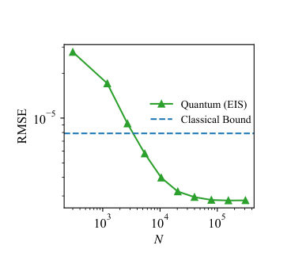
<figcaption class="paper-figure-caption"><b>Fig 5.</b> FIG. 5: Quantum advantage when simulating a 16-state cyclic random walk. Here, we consider the average RMSE error when estimating all events with probabilities from 10−9 to 10−8 for the 16-state cyclic random walk (see Appendix G 4 for details). As in the the 8-state case, both classical baseline and quantum models are set to have memory dimension of 4. As in Figure 4c, the blue line then denotes the the lower bound on RMSE achieved using classical models — even if we allowed unlimited samples. Meanwhile the green line plots the RMSE error of our quantum models as function of number of simulations. We see that quantum models can achieve RMSE below classical limits using only around 3000...</figcaption>
</figure>
</div>
<p><strong>Summary.</strong> This paper introduces a quantum-algorithmic framework to estimate the probability of future events in complex stochastic systems. It tackles the fundamental trade-off between memory requirements and estimation accuracy by combining quantum amplitude estimation with quantum-enhanced dimensional reduction. The results demonstrate that quantum methods can maintain high accuracy while drastically reducing the memory overhead compared to classical methods.</p>
<p><strong>Why it may be interesting.</strong> It directly addresses the practical limitations of quantum computation for simulating complex, long-term physical processes by showing how quantum techniques can manage the exponential growth of required classical memory states.</p>
<details>
<summary>Detailed structure</summary>
<p><strong>Main problem.</strong> The core challenge is accurately estimating the conditional probability of a future event in complex stochastic systems while overcoming the exponential memory scaling and computational limitations of traditional quantum algorithms.</p>
<p><strong>Main result.</strong> The authors propose a quantum-algorithmic method that simultaneously achieves a quadratic speed-up (like QAE) and significantly reduces the systematic bias associated with memory constraints.</p>
<p><strong>Method.</strong> The approach involves mapping classical stochastic processes to quantum memory states and employing a structured quantum circuit (MRQPE) to estimate probabilities, incorporating quantum-enhanced dimensional reduction techniques.</p>
<p><strong>Model / system.</strong> The work analyzes stationary stochastic processes, including Autoregressive (AR(2)) models and cyclic random walks, which are discretized and modeled using quantum memory registers.</p>
<p><strong>Key observables.</strong> Conditional future probabilities $P(X_{0:L} | \leftarrow x)$, estimation error ($\epsilon$), and the fidelity divergence rate (QFDR).</p>
<p><strong>Important parameters / regimes.</strong> Memory dimension ($D_c$ vs. $    ilde{D}$), required number of simulations ($N$), and the time horizon ($L$).</p>
<p><strong>Assumptions / limitations.</strong> The analysis relies on approximating the full quantum model with a reduced memory dimension ($   ilde{D} &lt; D_c$) while maintaining low estimation error.</p>
<p><strong>Figures summary.</strong> Figures illustrate the unitary evolution coupling memory and ancilla, the structured quantum circuit for state preparation, and comparisons of mean absolute errors for various time series models (AR(2), coin process) under noise.</p>
<p><strong>Paper structure.</strong> The paper first establishes the problem of memory vs. accuracy trade-off, then details the quantum-algorithmic framework (MRQPE) for state preparation, and finally validates the method by applying it to various time series models (AR(2), Poisson processes) to demonstrate simultaneous reduction in bias and memory cost.</p>
</details>
<details>
<summary>Abstract</summary>
<p>Many potential future events have devastating consequences, from the onset of earthquakes to financial black swan events. Accurate predictions of their probability of occurrence are vital. Yet as the stochastic systems underlying such events become increasingly complex, these probabilities can depend on ever-growing amounts of past data, which require ever more memory to track. The accuracy of our estimates is ultimately limited by both computational and memory constraints; the former to reduce sampling error, the latter to avoid sampling bias. Traditional quantum algorithms -- such as amplitude estimation -- address only the former, and become untenable especially in near-future quantum devices where quantum memory is a premium. Here, we offer quantum-algorithmic means to reduce systematic bias while maintaining a quadratic speed-up. Our results thus advance the timeline for the practical deployment of quantum technologies, and illustrate their additional benefits when simulating processes of growing complexity.</p>
</details>
<p><sub><a href="#top">↑ back to top</a></sub></p>

<p><a id="paper-2610.11195"></a></p>
<h3 id="retromorphic-testing-of-quantum-compiler-passes"><a href="http://arxiv.org/abs/2610.11195v1">Retromorphic Testing of Quantum Compiler Passes</a></h3>
<p><strong>Authors:</strong> Mushahid Khan, Olivia Di Matteo<br>
<strong>Type:</strong> theory · <strong>Category:</strong> quantum information and computing · <strong>PDF:</strong> <a href="https://arxiv.org/pdf/2610.11195v1">https://arxiv.org/pdf/2610.11195v1</a><br>
<strong>Analysis basis:</strong> full PDF text, analyzed in chunks</p>
<div class="figure-strip-hint">↔ Scroll figures horizontally</div>
<div class="paper-figures-scroll">
<figure class="paper-figure-card">
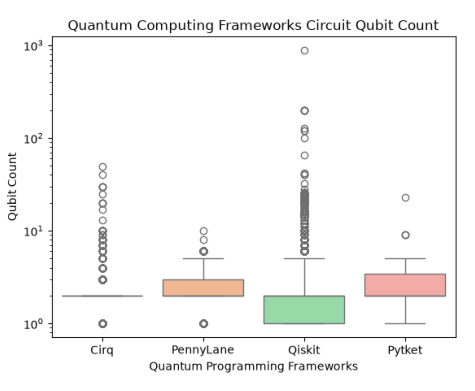
<figcaption class="paper-figure-caption"><b>Fig 1.</b> Fig. 1: Qubit count distribution of unit test circuits.</figcaption>
</figure>
<figure class="paper-figure-card">
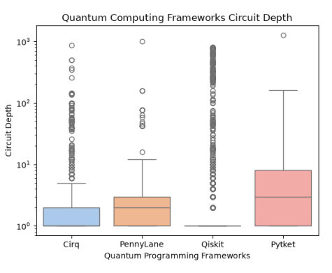
<figcaption class="paper-figure-caption"><b>Fig 2.</b> Fig. 2: Depth distribution of unit test circuits.</figcaption>
</figure>
<figure class="paper-figure-card">
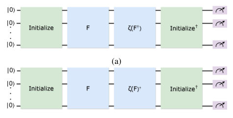
<figcaption class="paper-figure-caption"><b>Fig 3.</b> Fig. 4: Stage 1 variant quantum circuits. ζ is a compiler pass.</figcaption>
</figure>
<figure class="paper-figure-card">
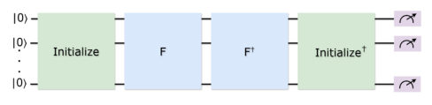
<figcaption class="paper-figure-caption"><b>Fig 4.</b> Fig. 3: Stage 1 baseline circuit.</figcaption>
</figure>
<figure class="paper-figure-card">
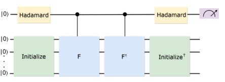
<figcaption class="paper-figure-caption"><b>Fig 5.</b> Fig. 5: Stage 2 baseline circuit.</figcaption>
</figure>
</div>
<p><strong>Summary.</strong> This paper addresses the critical challenge of verifying quantum compiler passes, which are difficult to test because simulating the expected output of large quantum circuits is computationally intractable. The authors introduce RetroQ, a novel retromorphic testing framework that verifies semantic and structural correctness by analyzing the transformation relationship between the input and output circuits. This methodology significantly improves the reliability of the quantum software stack by uncovering previously unknown compiler bugs.</p>
<p><strong>Why it may be interesting.</strong> While focused on software tools, the underlying concepts of rigorous verification, state space exploration, and structural invariance are highly relevant to developing reliable quantum simulation algorithms or analyzing physical models implemented via quantum circuits.</p>
<details>
<summary>Detailed structure</summary>
<p><strong>Main problem.</strong> The core challenge is verifying the correctness of quantum compiler passes, which transform high-level quantum programs into optimized, hardware-compatible circuits.</p>
<p><strong>Main result.</strong> The authors introduced RetroQ, a retromorphic testing methodology that successfully reproduced existing bugs and uncovered new defects in major quantum frameworks like PennyLane and Qiskit.</p>
<p><strong>Method.</strong> They propose a black-box testing methodology, RetroQ, inspired by metamorphic testing and the Hadamard test, to verify semantic preservation without needing to compute the intractable expected output.</p>
<p><strong>Model / system.</strong> The work focuses on abstract quantum circuits and the compiler passes ($\zeta$) that manipulate them. The system involves quantum programs being compiled down to hardware-compatible gate sequences.</p>
<p><strong>Key observables.</strong> Semantic equivalence ($F \equiv F'$), structural properties (gate count, depth), and specific execution details like symbolic parameter handling and commutation logic.</p>
<p><strong>Important parameters / regimes.</strong> The test circuits analyzed are generally found to be small and shallow, which limits the scope of current unit testing practices.</p>
<p><strong>Assumptions / limitations.</strong> The methodology assumes that the transformation preserves semantic equivalence, and it is limited by the difficulty of finding suitable initial states for comprehensive testing.</p>
<p><strong>Figures summary.</strong> The notes mention figures showing the qubit count and circuit depth distributions of existing unit test circuits, indicating they are generally small.</p>
<p><strong>Paper structure.</strong> The paper first establishes the problem (intractability of verification), analyzes existing unit testing practices across multiple frameworks, proposes the novel RetroQ methodology, demonstrates its effectiveness by finding bugs, and concludes by outlining future research directions.</p>
</details>
<details>
<summary>Abstract</summary>
<p>Quantum compilers play a critical role in transforming high-level quantum programs into optimized, hardware-compatible circuits. However, verifying the correctness of compiler passes remains challenging, as determining the expected output of large, deeply entangled quantum circuits is computationally intractable. This challenge is further amplified when compiler passes modify already complex circuit structures, making manual validation of transformed circuits impractical.   In this work, we perform a systematic analysis of unit tests for quantum compiler passes in four quantum programming frameworks (PennyLane, Qiskit, Cirq, and pytket). Our findings indicate validation is dominated by program-content and program-metric assertions, and test circuits are generally small and shallow. Motivated by these observations, we introduce a testing methodology for automated validation of quantum compiler passes based on retromorphic testing and principles from the Hadamard test. This methodology analyzes a compiler pass, test circuit, and expected pass behavior to verify semantic preservation and intended structural modifications.   We implement our methods in a framework, RetroQ, and apply it to compiler passes in PennyLane and Qiskit. Experimental evaluation reproduced several existing bugs as well as uncovered previously undetected defects, such as flawed symbolic parameter handling, incorrect commutation logic, failure to recognize self-adjointness of gates, and runtime crashes. These findings highlight the need for compiler-pass-specific testing methodologies to improve the reliability of the evolving quantum software stack.</p>
</details>
<p><sub><a href="#top">↑ back to top</a></sub></p>

<p><a id="paper-2610.10679"></a></p>
<h3 id="scmath1264math-superconductivity-intertwined-with-topological-order"><a href="http://arxiv.org/abs/2610.10679v1">SC$^\sharp$: superconductivity intertwined with topological order</a></h3>
<p><strong>Authors:</strong> Zhi-Qiang Gao, Yan-Qi Wang, Hui Yang, Zhaoyu Han, Ashvin Vishwanath<br>
<strong>Type:</strong> theory · <strong>Category:</strong> strongly correlated electrons · <strong>PDF:</strong> <a href="https://arxiv.org/pdf/2610.10679v1">https://arxiv.org/pdf/2610.10679v1</a><br>
<strong>Analysis basis:</strong> full PDF text, analyzed in chunks</p>
<div class="figure-strip-hint">↔ Scroll figures horizontally</div>
<div class="paper-figures-scroll">
<figure class="paper-figure-card">
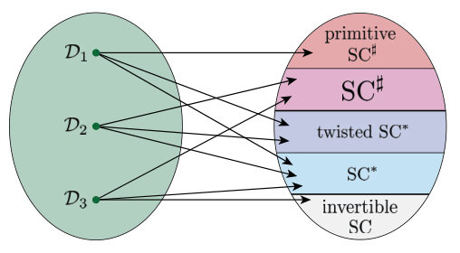
<figcaption class="paper-figure-caption"><b>Fig 1.</b> FIG. 1. Grading the intertwinement between super- conductivity (SC) and topological order (TO). Distinct classes are organized according to the topological properties of vortices. All five classes can be constructed from anyon con- densation in some parent UMTC D stacked with an atomic insulator, with a many-to-many correspondence in general.</figcaption>
</figure>
</div>
<p><strong>Summary.</strong> This paper classifies superconducting phases based on how strongly superconductivity intertwines with intrinsic topological order in 2D materials. The authors introduce the SC^sharp phase, which is defined by non-factorizable, non-Abelian vortex excitations. This work provides a powerful topological diagnostic tool to distinguish between different types of exotic superconducting states.</p>
<p><strong>Why it may be interesting.</strong> The deep connection between superconductivity, topological order, and non-Abelian anyons provides a rich theoretical playground for understanding emergent quantum phases in condensed matter systems.</p>
<details>
<summary>Detailed structure</summary>
<p><strong>Main problem.</strong> To develop a comprehensive classification framework for (2+1)D gapped superconductors that precisely characterizes the interplay between superconductivity and intrinsic topological order.</p>
<p><strong>Main result.</strong> The authors introduce the class SC^sharp, characterized by elementary vortices that cannot be factorized into simple superconducting and topological components, implying a fundamentally non-Abelian nature.</p>
<p><strong>Method.</strong> The classification relies on analyzing the topological properties of superconducting vortices using an algebraic framework involving modular tensor categories.</p>
<p><strong>Model / system.</strong> The system studied is a (2+1)D gapped superconductor with a condensate charge of 2ne, analyzed through the lens of anyon physics and topological field theory.</p>
<p><strong>Key observables.</strong> Topological properties of superconducting vortices, quantum dimension of the elementary vortex sector, and fusion rules.</p>
<p><strong>Important parameters / regimes.</strong> Condensate charge (2ne), flux quanta (h/(2ne)), and the level of intertwinement between SC and TO.</p>
<p><strong>Assumptions / limitations.</strong> The classification is argued to be exhaustive by relating all SC phases to anyon condensation from a parent UMTC.</p>
<p><strong>Figures summary.</strong> Figure 1 illustrates the classification scheme, grading the intertwinement between SC and TO based on vortex properties.</p>
<p><strong>Paper structure.</strong> The paper progresses by defining a hierarchy of superconducting phases: invertible SC $    o$ SC<em> $    o$ Twisted SC</em> $    o$ SC^sharp $   o$ Primitive SC^sharp, with each step defined by increasingly restrictive conditions on vortex factorization.</p>
</details>
<details>
<summary>Abstract</summary>
<p>Superconductivity and intrinsic topological order can intertwine in ways that go beyond simple coexistence. Here we develop a classification framework for (2+1)D gapped superconductors with condensate charge $2ne$. By focusing on the topological properties of superconducting vortices, we precisely characterize this interplay. We obtain a classification with increasing levels of intertwinement, from the well known invertible superconductors without topological order, to untwisted and twisted SC$^\ast$, and finally to SC$^{\sharp}$. Our main finding is the family SC$^{\sharp}$, in which the elementary vortex carrying $h/(2ne)$ flux cannot be factorized into an invertible superconductor vortex dressed by bulk anyons, and every elementary vortex is necessarily non-Abelian. For such phases, we also obtain no-go results: the elementary vortex sector has quantum dimension at least $\sqrt{6}$ and cannot satisfy Fibonacci fusion rules. We develop a systematic algebraic framework to obtain all these superconducting phases through anyon condensation, allowing us to construct several infinite families of examples and make connections to anyon superconductivity. Finally, we introduce primitive SC$^\sharp$ phases for which factorization of every nontrivial vortex sector is obstructed, and argue that they cannot arise by disordering the relative phases of lower-charge superconducting condensates. Our classification scheme based on vortex properties allows us to uncover new distinctions between topologically ordered superconductors and constrain how they can be realized.</p>
</details>
<p><sub><a href="#top">↑ back to top</a></sub></p>

<p><a id="paper-2610.10704"></a></p>
<h3 id="scattering-entanglement-entropy-between-one-particle-species-and-the-others"><a href="http://arxiv.org/abs/2610.10704v1">Scattering entanglement entropy between one particle species and the others</a></h3>
<p><strong>Authors:</strong> Yuan-Hao Zheng, Jiayin Gu<br>
<strong>Type:</strong> theory · <strong>Category:</strong> other · <strong>PDF:</strong> <a href="https://arxiv.org/pdf/2610.10704v1">https://arxiv.org/pdf/2610.10704v1</a><br>
<strong>Analysis basis:</strong> full PDF text, analyzed in chunks</p>
<div class="figure-strip-hint">↔ Scroll figures horizontally</div>
<div class="paper-figures-scroll">
<figure class="paper-figure-card">
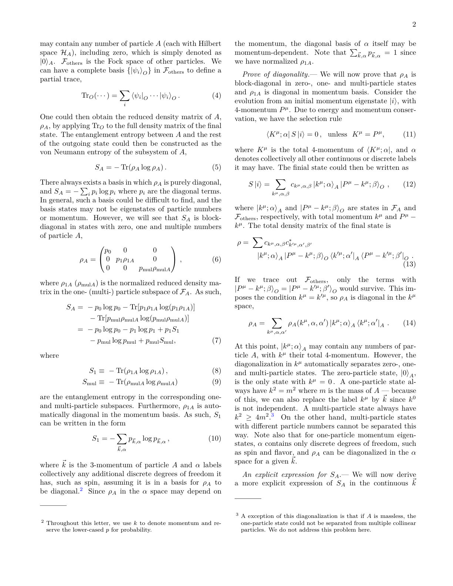
<figcaption class="paper-figure-caption"><b>Fig 1.</b> Low-resolution page preview, page 2</figcaption>
</figure>
<figure class="paper-figure-card">
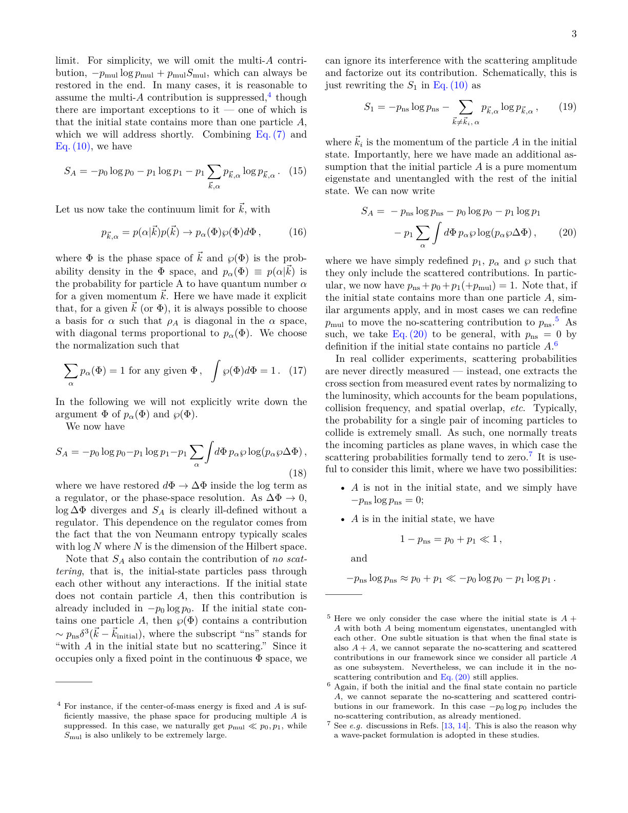
<figcaption class="paper-figure-caption"><b>Fig 2.</b> Low-resolution page preview, page 3</figcaption>
</figure>
<figure class="paper-figure-card">
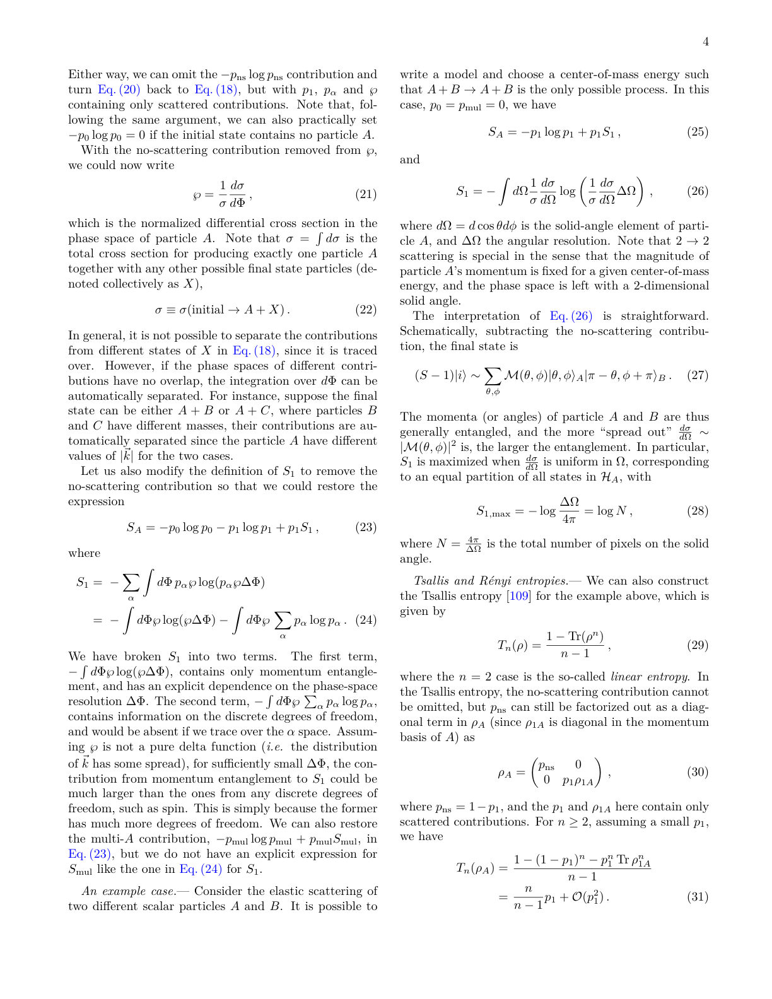
<figcaption class="paper-figure-caption"><b>Fig 3.</b> Low-resolution page preview, page 4</figcaption>
</figure>
<figure class="paper-figure-card">
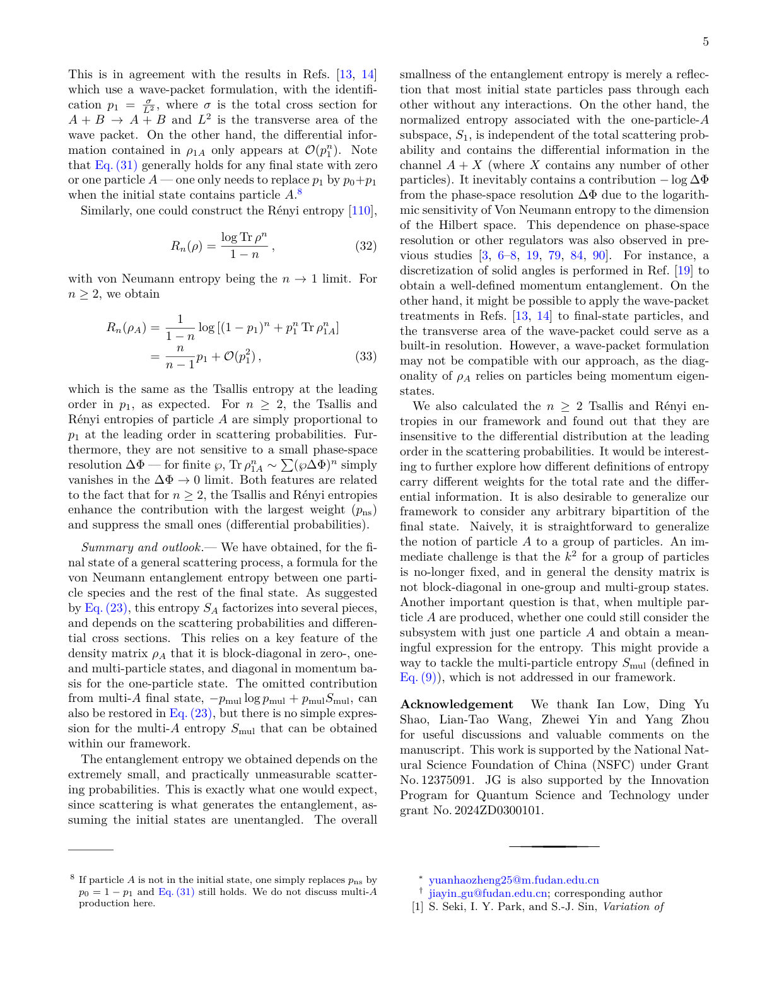
<figcaption class="paper-figure-caption"><b>Fig 4.</b> Low-resolution page preview, page 5</figcaption>
</figure>
<figure class="paper-figure-card">
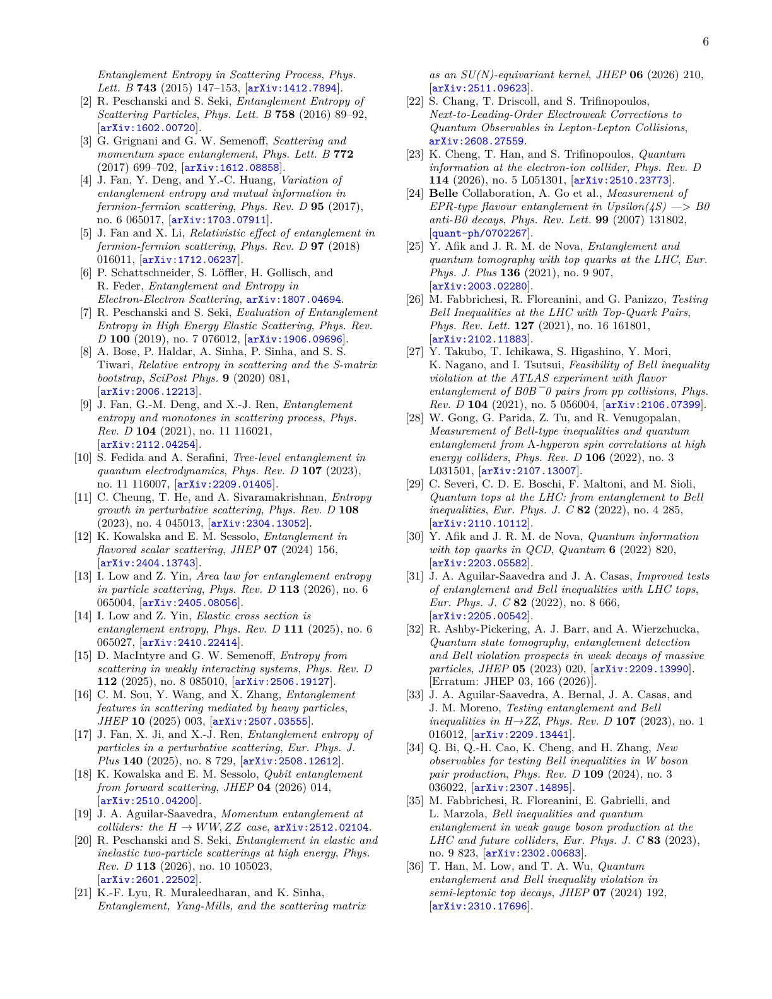
<figcaption class="paper-figure-caption"><b>Fig 5.</b> Low-resolution page preview, page 6</figcaption>
</figure>
</div>
<p><strong>Summary.</strong> This work develops a general method to calculate the entanglement entropy between one particle species and the rest of the final state following a quantum scattering event. By analyzing the reduced density matrix, the authors derive $S_A$ in terms of measurable scattering cross sections. This provides a powerful, model-independent tool for quantifying quantum correlations generated in particle collisions.</p>
<p><strong>Why it may be interesting.</strong> It provides a general, model-independent framework for quantifying entanglement generated in high-energy scattering, which is a key area of study in quantum field theory and particle physics.</p>
<details>
<summary>Detailed structure</summary>
<p><strong>Main problem.</strong> The paper constructs and calculates the entanglement entropy between a single particle species (A) and the rest of the final state in a general quantum scattering process.</p>
<p><strong>Main result.</strong> The entanglement entropy ($S_A$) can be expressed in terms of scattering probabilities and differential cross sections, providing a model-independent measure of entanglement generated during scattering.</p>
<p><strong>Method.</strong> The calculation uses the reduced density matrix formalism ($
ho_A$) and exploits the block-diagonal structure of $
ho_A$ in the momentum basis to derive the entropy formula.</p>
<p><strong>Model / system.</strong> The system is a general quantum scattering process governed by the S-matrix, starting from a pure initial momentum eigenstate. The final state is partitioned into the species A and all other particles.</p>
<p><strong>Key observables.</strong> Entanglement entropy ($S_A$), Tsallis and Rényi entropies ($T_n, R_n$), scattering probabilities ($p_0, p_1, p_{	ext{mul}}$), and differential cross sections ($\sigma$).</p>
<p><strong>Important parameters / regimes.</strong> Phase-space resolution factor ($\Delta\Phi$), scattering probabilities, and the order of scattering (up to one particle A).</p>
<p><strong>Assumptions / limitations.</strong> The initial state is a pure momentum eigenstate, and the derivation is straightforward only when the probability of producing multiple particles A is subleading.</p>
<p><strong>Paper structure.</strong> The paper progresses by defining the entanglement entropy, proving the block-diagonal structure of the reduced density matrix $
ho_A$, deriving the simplified form of $S_A$ (assuming $\le 1$ particle A), and finally taking the continuum limit.</p>
</details>
<details>
<summary>Abstract</summary>
<p>We construct the entanglement entropy of a general scattering process between one particle species (denoted as $A$) and the rest of the final state. Assuming a pure initial momentum eigenstate, we show that the reduced density matrix in particle $A$'s Fock space is block-diagonal in zero-, one- and multi-particle states, and is diagonal in the momentum basis for the one-particle state. As a result, we could write down the Von Neumann entropy of particle $A$, $S_A$, in terms of scattering probabilities and differential cross sections, assuming no more than one particle $A$ is produced in the final state. $S_A$ contains the information of both the total scattering probabilities (or cross sections) and the differential distributions --- the latter depends on a phase-space resolution factor as a result of the infinite-dimensional momentum Hilbert space. Our result is general and model-independent since we consider the full final state from time evolution ($S|i\rangle$) rather than a specific outcome, and is applicable as long as the probability for producing multiple particle $A$ is subleading. We also obtain the $n\geq2$ Tsallis and Rényi entropies in our framework and find out that, at the leading order, they are proportional to the total scattering probability and carry no differential information.</p>
</details>
<p><sub><a href="#top">↑ back to top</a></sub></p>

<p><a id="paper-2610.12441"></a></p>
<h3 id="short-range-vector-spin-glasses-parisi-hierarchies-and-real-space-ultrametricity"><a href="http://arxiv.org/abs/2610.12441v1">Short-Range Vector Spin Glasses: Parisi Hierarchies and Real-Space Ultrametricity</a></h3>
<p><strong>Authors:</strong> Akash Vijay, Jaewon Kim, Jong Yeon Lee<br>
<strong>Type:</strong> theory · <strong>Category:</strong> disordered systems and neural networks · <strong>PDF:</strong> <a href="https://arxiv.org/pdf/2610.12441v1">https://arxiv.org/pdf/2610.12441v1</a><br>
<strong>Analysis basis:</strong> full PDF text, analyzed in chunks</p>
<div class="figure-strip-hint">↔ Scroll figures horizontally</div>
<div class="paper-figures-scroll">
<figure class="paper-figure-card">
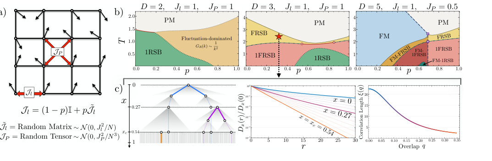
<figcaption class="paper-figure-caption"><b>Fig 1.</b> FIG. 1. (a) Short-range vector spin glass. N-component spins reside on the vertices of a D-dimensional hypercubic lattice. Each nearest-neighbor link l carries a matrix coupling Jl = (1 −p)I + p e Jl, which interpolates between clean ferro- magnetic exchange at p = 0 and a Gaussian random matrix at p = 1. Each elementary plaquette couples its four corner spins through an independent random rank-four tensor JP . The disorder variances scale with N as indicated, yielding a well-defined large-N limit with free energy proportional to NV . (b) Phase structure. Representative phase diagrams at Jl = 1 for (D, JP ) = (2, 1), (3, 1), and (5, 0.5). Resolved regions show the thermodynamically...</figcaption>
</figure>
<figure class="paper-figure-card">

<figcaption class="paper-figure-caption"><b>Fig 2.</b> FIG. 2. Representative Parisi profiles for the RS, 1RSB, FRSB, and 1FRSB phases. (a) In the RS phase, the Parisi profile is constant, q(x) = qEA. (b) In the 1RSB phase, q(x) jumps from 0 to the Edwards–Anderson overlap qEA at the breaking point m. (c) In the FRSB phase, q(x) varies continuously up to xc, where it reaches qEA and re- mains on the Edwards–Anderson plateau for x &gt; xc. (d) In the 1FRSB phase, the continuous branch reaches qm at xc, followed by a plateau up to m and a finite jump to qEA. When xc = m, the intermediate plateau has zero width.</figcaption>
</figure>
<figure class="paper-figure-card">

<figcaption class="paper-figure-caption"><b>Fig 3.</b> FIG. 3. Replica-symmetric phase diagrams at Jl = 1. At each point in the (p, T) plane, we show the admissible RS saddle with the largest replica free energy (89). Black and red curves denote continuous and first-order transitions, respectively. Momentum integrals are evaluated using the exact lattice kernel. SG1 and SG2 denote the lower- and higher-overlap glass branches. (a) Weak plaquette disorder, D = 5 and JP = 0.5. Only the SG1 glass branch appears, and all phase boundaries are continuous. The PM–FM, FM–SG1, and PM–SG1 boundaries meet at the multicritical point (square) of Eq. (61), p∗= 0.6945 and T ∗= 2.6420. The FM phase is bounded above by the gap-closing line T = (1 −p)/w1(D) and...</figcaption>
</figure>
<figure class="paper-figure-card">

<figcaption class="paper-figure-caption"><b>Fig 4.</b> FIG. 5. Stability of the RS solution at D = 5, Jl = 1, for (a) JP = 0.5 and (b) JP = 1. The replicon eigenvalue vanishes on the de Almeida–Thouless (AT) line (blue), which lies strictly above the locus M 2 = 0 at which the replica- symmetric condensate disappears (dashed). Between the two the saddle retains M 2 ̸= 0 but breaks replica symmetry, giv- ing a mixed phase (hatched, blue) in which ferromagnetic and glassy order coexist. Hatching marks every region where the replica-symmetric solution is unstable. Due to Eq. (114), this includes the whole glassy region for any JP ̸= 0. In both panels, the AT line and M 2 = 0 lines merge at the multi- critical point (square, p∗= 0.6945), whose...</figcaption>
</figure>
<figure class="paper-figure-card">

<figcaption class="paper-figure-caption"><b>Fig 5.</b> FIG. 6. 1RSB phase diagrams in the (p, T) plane for Jl = 1. At each point, we compare the admissible RS and 1RSB saddles and show the replicon-stable solution with the largest on-shell free energy. Off-white, blue, green, and teal denote the RS paramagnet (PM), RS ferromagnet (FM), unmagnetized 1RSB glass, and magnetized FM+1RSB phase, respectively. Amber marks regions unresolved within the RS/1RSB comparison. Solid red, dashed dark-blue, and dotted black curves denote the static m = 1 (random-first order transition) boundary, closure of the outer spin gap ∆0 = 0, and outer-replicon marginality λ(0) R = 0 with λ(1) R &gt; 0, respectively. Gray curves show the RS phase boundaries for reference;...</figcaption>
</figure>
</div>
<p><strong>Summary.</strong> This theoretical work investigates spin glasses with short-range interactions to determine if the mean-field Parisi theory applies. By analyzing a lattice spin model in the large-N limit, the authors prove that the continuous Parisi hierarchy is stable and, crucially, show that the abstract replica structure maps directly onto a real-space ultrametric organization of the system's pure states.</p>
<p><strong>Why it may be interesting.</strong> The connection between the abstract mathematical structure of RSB (Parisi hierarchy) and concrete, measurable real-space correlations (correlation length $\xi(q)$) provides a powerful, physically intuitive framework for understanding glassy dynamics in finite dimensions.</p>
<details>
<summary>Detailed structure</summary>
<p><strong>Main problem.</strong> The paper addresses whether the mean-field Parisi picture of replica symmetry breaking (RSB) can describe the low-temperature phase of spin glasses with strictly short-range interactions in finite dimensions.</p>
<p><strong>Main result.</strong> The model supports thermodynamically stable RSB phases, and the Parisi hierarchy acquires a direct real-space interpretation showing an ultrametric organization of pure states via correlation lengths.</p>
<p><strong>Method.</strong> The analysis employs the replica method in the large-N limit, analyzing the saddle-point structure of the free energy and relating the abstract Parisi profile to physical correlation lengths.</p>
<p><strong>Model / system.</strong> The system is a disordered model of N-component vector spins on a D-dimensional hypercubic lattice, featuring random couplings on nearest-neighbor links and plaquettes.</p>
<p><strong>Key observables.</strong> Edwards–Anderson order parameter ($q_{EA}$), Parisi profile $q(x)$, and the characteristic real-space correlation length $\xi(q)$ between pure states.</p>
<p><strong>Important parameters / regimes.</strong> Dimension $D$, large-$N$ limit, temperature $T$, and the overlap $q$ between pure states.</p>
<p><strong>Assumptions / limitations.</strong> The analysis relies on the large-N limit and assumes the existence of stable RSB phases characterized by specific Parisi profiles (1RSB, FRSB, etc.).</p>
<p><strong>Figures summary.</strong> Figures illustrate the model Hamiltonian (link and plaquette couplings), phase structure diagrams showing instability regions in different dimensions, and diagrams linking the Parisi tree levels to the decay of real-space correlation functions.</p>
<p><strong>Paper structure.</strong> The paper progresses by first defining the short-range model, then analyzing the stability of various RSB phases using replica calculations, and finally establishing the direct correspondence between the abstract Parisi hierarchy and the real-space ultrametric organization of pure states.</p>
</details>
<details>
<summary>Abstract</summary>
<p>Replica symmetry breaking (RSB) is the organizing principle of mean-field spin-glass theory, yet whether a continuous Parisi hierarchy can arise in a genuinely short-range system in finite spatial dimension remains unresolved. Here we introduce a disordered model of $N$-component vector spins on a $D$-dimensional hypercubic lattice, with random matrix couplings on nearest-neighbor links and random tensor couplings on elementary plaquettes. In the large-$N$ limit, the model supports thermodynamically stable one-step, full, and one-full RSB phases, alongside replica-symmetric paramagnetic and ferromagnetic phases. We find that spatial locality constrains these ordered phases through two distinct infrared mechanisms. ($i$) Quenched random anisotropy destroys uniform ferromagnetism for $D\leq4$ through an Imry-Ma mechanism. ($ii$) A continuous Parisi hierarchy gives rise to replica Goldstone modes whose gaplessness is protected by a Ward identity. At leading order in $1/N$, these modes behave as a band of free spin waves, producing infrared-divergent fluctuations in $D\leq2$ and a Mermin-Wagner instability of the continuously broken phase.   Remarkably, the Parisi hierarchy also acquires a direct real-space interpretation. For two pure states with mutual overlap $q$, a characteristic length $ξ(q)$ describes how far the differences between their frozen magnetization patterns remain correlated. Throughout a continuous sector of the Parisi hierarchy, $ξ(q)$ is independent of temperature and decreases monotonically with $q$. The ultrametric organization of pure states is therefore accompanied by an ultrametric hierarchy of real-space correlation lengths: states that separate near the root of the Parisi tree differ through long-wavelength frozen patterns, whereas states that separate farther from the root differ only on progressively shorter scales.</p>
</details>
<p><sub><a href="#top">↑ back to top</a></sub></p>
</details>
<h2 id="secondary-cond-mat-archives">Secondary cond-mat archives</h2>
<p><em>Papers from cond-mat.mtrl-sci, mes-hall, other, soft, supr-con. These archives are de-prioritized — they appear at the end regardless of relevance score.</em></p>
<h3 id="relevant-in-secondary-archives-16">Relevant in secondary archives (16)</h3>

<p><a id="paper-2610.12223"></a></p>
<h3 id="measurement-induced-enhancement-of-the-math1310math-parity-lifetime-in-a-majorana-tetron"><a href="http://arxiv.org/abs/2610.12223v1">Measurement-induced enhancement of the $X$-parity lifetime in a Majorana tetron</a></h3>
<p><strong>Authors:</strong> Katharina Laubscher, Jay D. Sau, Sankar Das Sarma<br>
<strong>Type:</strong> theory · <strong>Category:</strong> quantum information and computing · <strong>PDF:</strong> <a href="https://arxiv.org/pdf/2610.12223v1">https://arxiv.org/pdf/2610.12223v1</a><br>
<strong>Analysis basis:</strong> full PDF text, analyzed in chunks
<strong>Topic relevance:</strong> 🔥 <code>quantum measurements</code> <strong>4/5</strong> · <code>Full counting statistics</code> <strong>1/5</strong> · <code>correlated / nonlocal dissipation</code> <strong>1/5</strong> · <code>driven-dissipative phase transition</code> <strong>1/5</strong> · <code>methods for driven-dissipative</code> <strong>1/5</strong></p>
<div class="figure-strip-hint">↔ Scroll figures horizontally</div>
<div class="paper-figures-scroll">
<figure class="paper-figure-card">

<figcaption class="paper-figure-caption"><b>Fig 1.</b> FIG. 1: Schematic of the dot-tetron model in the X- measurement configuration. Two topological nanowires (light gray) host Majorana zero modes γ1, γ3 (upper wire) and γ2, γ4 (lower wire) with residual intrawire hy- bridizations EM and E′ M. An auxiliary quantum dot with detuning ED is tunnel coupled to γ1 and γ2 with amplitudes t1 and t2eiϕ, respectively. The interferomet- ric phase ϕ is controlled by the magnetic flux Φ through the measurement loop. The vertical dark gray line indi- cates the superconducting backbone connecting the two nanowires.</figcaption>
</figure>
<figure class="paper-figure-card">

<figcaption class="paper-figure-caption"><b>Fig 2.</b> FIG. 2: Comparison of the parity dynamics in the measurement and isolated-tetron configurations. (a) Relaxation in the measurement configuration for t1 = 2 µeV, t2 = 2.5 µeV, ED = 15 µeV, and ϕ = π/2, corresponding to B0 x ≈0.67 µeV. We take intrawire MZM splittings EM = 0.05 µeV, E′ M = 0.15 µeV, such that B0 z,+ = 0.2 µeV and |B0 z,−| = 0.1 µeV. Both MZM-splitting noise with Az = 10−17 eV2 and dot-detuning noise with AD = 10−13 eV2</figcaption>
</figure>
<figure class="paper-figure-card">

<figcaption class="paper-figure-caption"><b>Fig 3.</b> FIG. 3: Spectrum and quantum capacitance response of the full dot–tetron model. (a)-(c) Eigenenergies E and (d)-(f) corresponding detuning curvatures C = ∂2E/∂E2 D as functions of the dot detuning ED, for ϕ = 0, π/4, π/2, respectively. The curvatures C are proportional to the state-dependent quantum capacitance. We show the P = +1 sector for EM = 0.05 µeV and E′ M = 0.15 µeV. The solid black curves correspond to (t1, t2) = (2 µeV, 2.5 µeV) and the dashed blue curves to (t1, t2) = (1.2 µeV, 3.3 µeV). The insets in panels (d)-(f) show the difference in capacitance ∆C12 = |C1 −C2| between the two lowest-energy eigenstates.</figcaption>
</figure>
<figure class="paper-figure-card">

<figcaption class="paper-figure-caption"><b>Fig 4.</b> FIG. 4: Thermally weighted transition rates in the full four-state dot–tetron model. The equilibrium event rates Γth nm, defined in Eq. (55), are shown as functions of dot detuning ED at ϕ = π/2 for total parity (a) P = +1 and (b) P = −1. Near resonance, the dominant 1 ↔4 and 2 ↔3 transitions motivate the two-manifold description A = {1, 4}, B = {2, 3}. With increasing detuning, transition traffic involving the upper states is suppressed and the lowest-doublet channel becomes dominant. Parameters are t1 = 2 µeV, t2 = 2.5 µeV, EM = 0.05 µeV, E′ M = 0.15 µeV, and T = 50 mK. The independent noise sources have amplitudes AD = 10−13 eV2 and AM = A′ M = 0.5 × 10−17 eV2, with spectral densities...</figcaption>
</figure>
<figure class="paper-figure-card">

<figcaption class="paper-figure-caption"><b>Fig 5.</b> Figure 5 shows that the two thermally averaged man- ifolds retain a finite capacitance contrast over the same near-resonant parameter regime in which the rate hierar- chy of Fig. 4 is observed. At the representative point ED = 4 µeV, ϕ = π/2, for the nearly balanced case t1 = 2 µeV, t2 = 2.5 µeV and with the remaining parameters as given in the caption of Fig. 5, we ob- tain ∆Cmanif ≃0.03 µeV−1. Using the dimensionless gate lever arm α = 0.15 quoted in Ref. [17], we esti- mate the corresponding quantum-capacitance difference as ∆CQ ≃(eα)2∆Cmanif ≃110 aF, which is comparable</figcaption>
</figure>
</div>

<p><strong>Summary.</strong> This theoretical study models a Majorana tetron qubit coupled to a measurement dot to understand its parity lifetime. The authors demonstrate that the measurement coupling generates an energy splitting that effectively shields the qubit from low-frequency noise. This measurement-induced stabilization can dramatically extend the observable coherence time beyond the intrinsic coherence limit of the isolated qubit.</p>
<p><strong>Why it may be interesting.</strong> This work directly addresses decoherence mitigation in topological qubits by showing that the act of measurement itself can enhance coherence, a crucial concept for scalable quantum computation.</p>
<details>
<summary>Detailed structure</summary>
<p><strong>Main problem.</strong> The paper theoretically investigates how coupling a Majorana tetron qubit to an auxiliary measurement dot modifies the intrinsic $X$-parity lifetime.</p>
<p><strong>Main result.</strong> Measurement coupling can stabilize the $X$-parity state, leading to measured lifetimes that significantly exceed the bare coherence time, even in the presence of noise.</p>
<p><strong>Method.</strong> The study uses a minimal model Hamiltonian, analyzing the system dynamics in both the dispersive and near-resonant regimes.</p>
<p><strong>Model / system.</strong> The system is a Majorana tetron (four Majorana zero modes) coupled to an auxiliary quantum dot. The dynamics are analyzed using effective two-level Hamiltonians derived from the full coupled dot-tetron system.</p>
<p><strong>Key observables.</strong> Interwire X-parity lifetime and X-parity switching time.</p>
<p><strong>Important parameters / regimes.</strong> Noise strengths (e.g., $1/f$ noise), bare-tetron coherence time ($T_2^*$), and the coupling strength to the measurement dot.</p>
<p><strong>Assumptions / limitations.</strong> The analysis considers noise sources from both the readout dot potential and the residual Majorana splittings, and it analyzes the system in two distinct coupling regimes.</p>
<p><strong>Figures summary.</strong> Figure 1 provides a schematic of the dot-tetron model in the X-measurement configuration, illustrating the nanowires, MZMs, the dot, and the coupling terms.</p>
<p><strong>Paper structure.</strong> The paper introduces the coupled dot-tetron model and its dispersive description in an early section, followed by detailed calculations of the noise-induced X-parity dynamics in subsequent sections.</p>
</details>
<details>
<summary>Abstract</summary>
<p>A recent experiment [arXiv:2507.08795] has reported measurements of the interwire $X$-parity lifetime in a Majorana tetron device via the quantum capacitance of an auxiliary readout dot. Motivated by these measurements, we theoretically study the interwire parity lifetime in a minimal model of the coupled dot-tetron system subject to electrostatic noise. We show that coupling to the measurement dot can itself strongly modify the parity dynamics by generating an energy splitting that shifts noise-induced transitions to finite frequency and thereby stabilizes the measured states against low-frequency fluctuations. For representative noise strengths motivated by disordered nanowire devices, we find $X$-parity switching lifetimes of order microseconds in the measurement configuration even when the corresponding bare-tetron coherence time is only tens of nanoseconds long. We analyze both the dispersive regime, where the dot can be integrated out and the dynamics reduces to an effective two-level system, and the near-resonant regime, where all four low-energy states participate. In the latter case, rapid transitions organize the spectrum into two long-lived manifolds that approximately correspond to sectors of the combined dot-tetron $X$-loop parity, yielding effective two-state switching despite the underlying multilevel structure. Our results show that measurement-induced stabilization can substantially enhance the observed $X$-parity switching lifetime, such that the lifetime measured under continuous readout can greatly exceed the intrinsic idle $T_2^*$ coherence time of the isolated Majorana tetron qubit.</p>
</details>
<p><sub><a href="#top">↑ back to top</a></sub></p>

<p><a id="paper-2610.10938"></a></p>
<h3 id="a-theory-for-detecting-the-turing-instability-on-static-and-temporal-multiplex-networks"><a href="http://arxiv.org/abs/2610.10938v1">A theory for detecting the Turing instability on static and temporal multiplex networks</a></h3>
<p><strong>Authors:</strong> Joshua Ritchie<br>
<strong>Type:</strong> theory · <strong>Category:</strong> statistical mechanics · <strong>PDF:</strong> <a href="https://arxiv.org/pdf/2610.10938v1">https://arxiv.org/pdf/2610.10938v1</a><br>
<strong>Analysis basis:</strong> full PDF text, analyzed in chunks
<strong>Topic relevance:</strong> <code>analog quantum simulation</code> <strong>3/5</strong> · <code>driven-dissipative phase transition</code> <strong>3/5</strong> · <code>methods for driven-dissipative</code> <strong>3/5</strong> · <code>correlated / nonlocal dissipation</code> <strong>2/5</strong> · <code>non-equilibrium universality</code> <strong>2/5</strong> · <code>Keldysh / 2PI / non-Gaussian methods</code> <strong>1/5</strong></p>
<div class="figure-strip-hint">↔ Scroll figures horizontally</div>
<div class="paper-figures-scroll">
<figure class="paper-figure-card">

<figcaption class="paper-figure-caption"><b>Fig 1.</b> Figure 1: Patterning corresponding to “Simulation 1” and “Simulation 2”. These are 3- node networks with adjacency matrices given by Eq. (3.3a). Row 1 (plots (a)–(d)) shows the results corresponding to (a0, a1) = (1, 1) (“Simulation 1”) and row 2 (plots(e)–(h)) shows the results corresponding to (a0, a1) = (0.2, 1). For both simulations we set d = 0.0025.</figcaption>
</figure>
<figure class="paper-figure-card">

<figcaption class="paper-figure-caption"><b>Fig 2.</b> Figure 2: The instability results corresponding to “Simulation 3”. In (a) the gray-shaded region corresponds to violation of Eq. (2.33b) with d = 0.1 where A1 is given by Eq. (3.5) and A2 by Eq. (3.6b). (b) Shows the non-linear modes corresponding to the particular choice (a1, a2) = (0.2, 1). Here the red line corresponds to the “most unstable” mode and the blue line corresponds to the “second-most unstable” mode.</figcaption>
</figure>
<figure class="paper-figure-card">

<figcaption class="paper-figure-caption"><b>Fig 3.</b> Figure 3: Patterning corresponding to “Simulation 3”. These are 16-node networks with A1 given by Eq. (3.5) and A2 by Eq. (3.6b) with (a1, a2) = (0.2, 1). For this simulation we set d = 0.1.</figcaption>
</figure>
<figure class="paper-figure-card">

<figcaption class="paper-figure-caption"><b>Fig 4.</b> Figure 4: The instability region corresponding to “Simulation 4”. In (a) the gray-shaded region corresponds to violation of Eq. (2.33b) with d = 1 where A1 is given by Eq. (3.5) and A2 by Eq. (3.8). (b) Shows the non-linear modes corresponding to the particular choice (a1, a2) = (0.00015, 1). Here the red line corresponds to the “most unstable” mode and the blue line corresponds to the “second-most unstable” mode.</figcaption>
</figure>
<figure class="paper-figure-card">

<figcaption class="paper-figure-caption"><b>Fig 5.</b> Figure 5: Patterning corresponding to “Simulation 4”. These are 16-node networks with A1 given by Eq. (3.5) and A2 by Eq. (3.8) with (a1, a2) = (0.00015, 1). For this simulation we set d = 1.</figcaption>
</figure>
</div>

<p><strong>Summary.</strong> This paper introduces a general mathematical framework to analyze pattern formation (Turing instability) in coupled reaction-diffusion systems defined on multiplex networks. It extends standard stability analysis to handle time-varying and multi-layered network structures. The work is significant for its generality, providing tools to study complex ecological or chemical dynamics on realistic, interconnected systems.</p>
<p><strong>Why it may be interesting.</strong> While the core topic is reaction-diffusion dynamics, the mathematical tools developed for analyzing coupled, time-dependent systems on complex topologies (multiplex networks) are highly relevant to modeling open quantum systems or quantum information flow across interconnected quantum modules.</p>
<details>
<summary>Detailed structure</summary>
<p><strong>Main problem.</strong> To develop a general framework for performing linear instability analysis, specifically detecting the Turing instability, on complex multiplex networks.</p>
<p><strong>Main result.</strong> The framework successfully extends instability analysis to non-autonomous, multiplex networks, providing explicit criteria for instability when the network Laplacians commute.</p>
<p><strong>Method.</strong> The analysis involves linearizing the reaction-diffusion equations around a steady state and analyzing the eigenvalues of the resulting mode matrix, which is adapted for time-dependent and multiplex structures.</p>
<p><strong>Model / system.</strong> The study uses $m$-unknowns governed by non-autonomous reaction-diffusion equations on $n$-node temporal multiplex networks. An application is the two-species predator-prey model on archipelagos.</p>
<p><strong>Key observables.</strong> Eigenvalues of the mode matrix (determining stability), and the time evolution of the mode amplitudes ($w_{\alpha,\ell}(t)$).</p>
<p><strong>Important parameters / regimes.</strong> Diffusion coefficients ($d_\alpha$), reaction kinetics parameters ($h_\alpha(t)$), and the time dependence of the network connectivity.</p>
<p><strong>Assumptions / limitations.</strong> The analysis assumes the absence of inter-layer diffusion and that the network structure can be analyzed via linearization, though the general case requires numerical solutions.</p>
<p><strong>Figures summary.</strong> Figures illustrate the time evolution of species concentrations ($u_k, v_k$) for predator-prey models on 16-node networks, showing the transition from pattern formation to wave-like dynamics as time progresses.</p>
<p><strong>Paper structure.</strong> The paper first reviews the general theory for linear instability on multiplex networks, deriving explicit criteria for the commuting Laplacian case. It then applies this theory to a predator-prey model, analyzing both static and time-dependent scenarios, culminating in numerical simulations.</p>
</details>
<details>
<summary>Abstract</summary>
<p>The purpose of this work is to introduce and discuss a general framework for performing a linear instability analysis on multiplex networks, in the absence of inter-layer diffusion, with the specific motivation of detecting the Turing instability. The formalism itself is presented in full generality for $m$-unknowns, each of which arise as solutions of non-autonomous reaction-diffusion equations, on $n$-node temporal multiplex networks. In addition, we identify a class of multiplex networks for which the Laplacian matrices commute. In this setting analytical progress can be made and the explicit inequalities, governing instability, are derived. In order to explore our formalism we apply it to the specific example of a two-species predator-prey model on archipelagos. Here nodes are interpreted as islands and edges correspond to the transportation network for each species. Moreover, the non-autonomous setting is used to model a variety of natural phenomena.</p>
</details>
<p><sub><a href="#top">↑ back to top</a></sub></p>

<p><a id="paper-2610.10733"></a></p>
<h3 id="hydrodynamic-anomalous-hall-effect-in-a-two-dimensional-dirac-fluid"><a href="http://arxiv.org/abs/2610.10733v1">Hydrodynamic Anomalous Hall Effect in a Two-Dimensional Dirac Fluid</a></h3>
<p><strong>Authors:</strong> A. Levchenko, D. A. Pesin<br>
<strong>Type:</strong> theory · <strong>Category:</strong> other · <strong>PDF:</strong> <a href="https://arxiv.org/pdf/2610.10733v1">https://arxiv.org/pdf/2610.10733v1</a><br>
<strong>Analysis basis:</strong> full PDF text, analyzed in chunks
<strong>Topic relevance:</strong> <code>Keldysh / 2PI / non-Gaussian methods</code> <strong>3/5</strong> · <code>methods for driven-dissipative</code> <strong>2/5</strong> · <code>analog quantum simulation</code> <strong>1/5</strong> · <code>correlated / nonlocal dissipation</code> <strong>1/5</strong> · <code>driven-dissipative phase transition</code> <strong>1/5</strong> · <code>non-equilibrium universality</code> <strong>1/5</strong> · <code>quantum measurements</code> <strong>1/5</strong></p>
<div class="figure-strip-hint">↔ Scroll figures horizontally</div>
<div class="paper-figures-scroll">
<figure class="paper-figure-card">

<figcaption class="paper-figure-caption"><b>Fig 1.</b> FIG. 1. Coordinate shifts in single-particle and two-particle scattering. Displacements are exaggerated; dashed lines are reference outgoing trajectories with the same final momenta but without a coordinate shift. (a) An impurity collision changes the wave-packet momentum from k to k′. At small transfer q = k′ −k, the leading shift is δr = Ω(k)ˆz × q; the inset illustrates its orientation for Ω&gt; 0. For the con- duction band studied here, Ω&lt; 0 when m &gt; 0. (b) A pair collision conserves k1 + k2 = p1 + p2. The offsets d1, d2 il- lustrate the total shift δr = d1 + d2 of Eq. (10); they do not assign separate shifts to identifiable electrons. The pair center of charge shifts by δr/2, so the...</figcaption>
</figure>
<figure class="paper-figure-card">

<figcaption class="paper-figure-caption"><b>Fig 2.</b> FIG. 2. Mass dependence of the clean limit hy- drodynamic shift coefficient of Eq. (48), σcl xy ≃ H(m/εF ; T/εF )(e2/ℏ)(T/εF )2 per cone, for the contact interaction at T/εF = 0.02. Open circles: one-mode evalu- ation using the exact off-shell collision moments J[χ], Q[χ]. Crosses: the corresponding three-component generation vector and 3 × 3 collision matrix for the enlarged odd radial space {ξ, ξ3, ξ5}. Both use the exactly momentum-projected basis (37) and the leading Sommerfeld drive vector. Their separation therefore tests basis convergence at leading low-temperature order, not the full finite-T systematic error. Triangles: the finite-T Galerkin result with exact drive projection and a...</figcaption>
</figure>
<figure class="paper-figure-card">

<figcaption class="paper-figure-caption"><b>Fig 3.</b> FIG. 3. Finite-window collinear enhancement of the collision moments and relative stability of the Hall ratio. Upper panel: |J[χ]|/T 4 (filled symbols) and Q[χ]/T 4 (open symbols), nor- malized separately to their values at T0 = 0.02 εF , versus L = ln(pF vF /T) for m/εF = 0.3 (circles) and 0.6 (squares). Thin straight lines are chords through the first and last points, not asymptotic fits. Lower panel: H(1) LS (T)/H(1) LS (T0) from the same one-mode correlated estimates. Dashed curves are the ratios of the corresponding upper-panel chords; they match the endpoints by construction and are not independent fits to H(1) LS . The large enhancement of each collision moment is substantially...</figcaption>
</figure>
<figure class="paper-figure-card">

<figcaption class="paper-figure-caption"><b>Fig 4.</b> FIG. 4. Finite-temperature interparticle shift coefficients in the clean and dc limits, at T/εF = 0.02. The clean values are identical to the finite-T series in Fig. 2; the dc values use the same collision matrices with the disorder-modified effective drive. Connecting segments guide the eye only over 0.1 ≤r ≤ 0.8. At r = 0.9, where εF −|m| = 5T, separate diamonds show the band-edge audit: filled orange for the clean limit, open red for dc. These points retain the finite-temperature band-edge departure from the nearly linear clean series; no interpolation to them is implied. The dashed dc estimate, 0.58r/(1 + 3r2), combines the empirical clean fit H ≃0.29r with the leading thermal...</figcaption>
</figure>
</div>

<p><strong>Summary.</strong> This theoretical work develops a kinetic theory to calculate the anomalous Hall effect arising from electron-electron collisions in a 2D Dirac fluid. By analyzing two-particle coordinate shifts, the authors show that the collision contribution to the AHE is non-trivial, particularly because the DC limit and the clean limit yield different results. This highlights how interaction effects can encode details about momentum relaxation even in the absence of disorder.</p>
<p><strong>Why it may be interesting.</strong> While focused on condensed matter transport, the use of kinetic theory, non-equilibrium Green's functions implicitly, and the analysis of non-commuting limits ($\omega 	o 0$ vs. $\Gamma 	o 0$) provides advanced techniques applicable to open quantum systems dynamics.</p>
<details>
<summary>Detailed structure</summary>
<p><strong>Main problem.</strong> The paper investigates the contribution of electron-electron collisions to the Anomalous Hall Effect (AHE) in a two-dimensional Dirac fluid, moving beyond standard single-particle descriptions.</p>
<p><strong>Main result.</strong> The collision-induced anomalous Hall response is calculated using kinetic theory, showing that the limits of vanishing frequency and vanishing disorder do not commute, leading to a finite DC correction that retains information about momentum relaxation.</p>
<p><strong>Method.</strong> The authors develop and apply a kinetic theory approach, deriving the collision-induced current from two-particle coordinate shifts within a linearized Boltzmann equation framework.</p>
<p><strong>Model / system.</strong> The system modeled is a two-dimensional massive Dirac Fermi liquid subjected to weak contact interactions and weak short-range disorder. The analysis uses a semiclassical kinetic equation incorporating both single-particle (impurity) and two-particle (pair collision) scattering terms.</p>
<p><strong>Key observables.</strong> Anomalous Hall conductivity ($\sigma_{xy}$), collision-induced Hall response, and the pair function $R(k_1, k_2)$.</p>
<p><strong>Important parameters / regimes.</strong> Interaction strength ($\lambda$), disorder strength ($\Gamma$), driving frequency ($\omega$), and the ratio between these rates ($\Gamma \ll \omega \ll \gamma_{ee}$ for the hydrodynamic regime).</p>
<p><strong>Assumptions / limitations.</strong> The calculations rely on developing a kinetic description for the collision integral and utilize approximations such as the additive collision model and specific limits for frequency and disorder.</p>
<p><strong>Figures summary.</strong> Figure 1 illustrates the coordinate shifts ($\delta r$) arising from both single-particle impurity scattering and two-particle pair collisions, showing the geometric nature of these shifts.</p>
<p><strong>Paper structure.</strong> The paper progresses from establishing the general kinetic framework for the hydrodynamic AHE, deriving the two-particle coordinate shift, and culminating in the calculation of the shift conductivity $\sigma_{	ext{shift}}^{xy}(\omega)$ and the effective DC transport coefficients.</p>
</details>
<details>
<summary>Abstract</summary>
<p>In ultraclean conductors, electron-electron collisions can make transport hydrodynamic. In a Berry-curved band, these collisions can also produce two-particle coordinate shifts, which contribute to the anomalous Hall current in the presence of a transport electric field. We develop a kinetic theory of this contribution for a two-dimensional massive Dirac Fermi liquid with weak contact interactions and weak short-range disorder. The computed response is independent of interaction strength at leading Born order. Its contribution to the anomalous Hall conductivity is comparable to the thermal correction to the intrinsic anomalous Hall conductivity. The existence of the momentum zero mode of the electron-electron collision integral leads to a nontrivial frequency dependence of the anomalous Hall response considered in this work. In particular, the limits of vanishing frequency (dc) and vanishing disorder do not commute. In the dc limit, the momentum response to the transport field grows inversely with the momentum relaxation rate. This allows arbitrarily weak, energy-dependent impurity scattering to produce a finite correction by coupling conserved momentum to the modes relaxed by electron-electron scattering. This correction disappears when the clean limit is taken before the zero-frequency limit. As a result, the interaction-induced Hall response retains information about the mechanism of momentum relaxation even as the overall disorder strength tends to zero.</p>
</details>
<p><sub><a href="#top">↑ back to top</a></sub></p>

<p><a id="paper-2610.10818"></a></p>
<h3 id="multistability-and-juggling-states-in-frustrated-kuramoto-oscillators-on-ring-networks"><a href="http://arxiv.org/abs/2610.10818v1">Multistability and Juggling States in Frustrated Kuramoto Oscillators on Ring Networks</a></h3>
<p><strong>Authors:</strong> Guilherme S. Costa, Ricardo Fariello, Marcus A. M. de Aguiar<br>
<strong>Type:</strong> theory · <strong>Category:</strong> statistical mechanics · <strong>PDF:</strong> <a href="https://arxiv.org/pdf/2610.10818v1">https://arxiv.org/pdf/2610.10818v1</a><br>
<strong>Analysis basis:</strong> full PDF text, analyzed in chunks
<strong>Topic relevance:</strong> <code>analog quantum simulation</code> <strong>3/5</strong> · <code>driven-dissipative phase transition</code> <strong>2/5</strong> · <code>non-equilibrium universality</code> <strong>2/5</strong> · <code>Frenkel-Kontorova</code> <strong>1/5</strong> · <code>correlated / nonlocal dissipation</code> <strong>1/5</strong></p>
<div class="figure-strip-hint">↔ Scroll figures horizontally</div>
<div class="paper-figures-scroll">
<figure class="paper-figure-card">

<figcaption class="paper-figure-caption"><b>Fig 1.</b> Figure 1: Equilibrium points for K = ω = 1, J = 4 and Q = 1 (circles and squares) and 3</figcaption>
</figure>
<figure class="paper-figure-card">

<figcaption class="paper-figure-caption"><b>Fig 2.</b> Figure 2: Heatmap of oscillators’ phases of a typical simulation of the matrix-coupled</figcaption>
</figure>
<figure class="paper-figure-card">

<figcaption class="paper-figure-caption"><b>Fig 3.</b> Figure 3: Phase evolution of typical oscillators: (a) Q = 1 for J = 1.5 and J = 3 and (b)</figcaption>
</figure>
<figure class="paper-figure-card">

<figcaption class="paper-figure-caption"><b>Fig 4.</b> Figure 4: (a) Probability of finding the system with f stationary fringes, computed from</figcaption>
</figure>
</div>

<p><strong>Summary.</strong> This paper analyzes the complex synchronization behavior of coupled Kuramoto oscillators on ring networks, revealing multiple stable states. Key findings include the existence of dynamic 'juggling' states where clusters move and interact, contrasting with simpler static equilibria. The work provides insights into how network topology and coupling parameters dictate the system's final collective state.</p>
<p><strong>Why it may be interesting.</strong> The study of collective dynamics, pattern formation, and non-equilibrium steady states in coupled oscillators provides strong analogies to phase transitions and collective behavior seen in many-body quantum systems.</p>
<details>
<summary>Detailed structure</summary>
<p><strong>Main problem.</strong> The study investigates the complex synchronization dynamics, multistability, and emergent clustered states in coupled Kuramoto oscillators arranged on ring networks.</p>
<p><strong>Main result.</strong> The system exhibits rich dynamics, ranging from stable static clusters to active 'juggling' states where cluster interfaces move along the ring, and these interfaces can annihilate upon collision.</p>
<p><strong>Method.</strong> The analysis combines analytical stability studies (linearization around equilibrium points) with the examination of time evolution patterns observed in numerical simulations.</p>
<p><strong>Model / system.</strong> The model consists of matrix-coupled Kuramoto oscillators on a ring network, governed by equations incorporating coupling parameters (K, J) and natural frequencies ($\omega$).</p>
<p><strong>Key observables.</strong> Synchronized clustered solutions, cluster interface movement (domain velocity $\vartheta$), and the stability eigenvalues ($\lambda_p$) of the system.</p>
<p><strong>Important parameters / regimes.</strong> Coupling strengths ($K, J$), natural frequencies ($\omega$), network connectivity (ring structure), and the interaction range ($Q$).</p>
<p><strong>Assumptions / limitations.</strong> The analysis distinguishes between analytically solvable static equilibrium states and dynamically evolving 'juggling' states arising from random initial conditions.</p>
<p><strong>Figures summary.</strong> Figures illustrate phase evolution heatmaps showing cluster formation and interface drift, and plots detail the distribution of stationary fringes ($f$) as a function of coupling range ($Q$).</p>
<p><strong>Paper structure.</strong> The paper progresses from defining the general coupled oscillator model to analyzing specific families of synchronized solutions (static vs. rotating clusters), and finally detailing the dynamic 'juggling' mechanism observed during time evolution.</p>
</details>
<details>
<summary>Abstract</summary>
<p>We study the properties of matrix coupled oscillators in ring networks and show that the system supports several families of synchronized clustered solutions. One of these families is characterized by consecutive oscillators belonging to distinct clusters, called alternate ordering, with two classes of solutions. The first consists of one or two static clusters, that lock on phases that depend on the coupling parameters, despite the non-zero natural oscillation frequency. The second one is comprised of clusters that rotate rigidly. The number of clusters depends on the neighbor connectivity. We also investigated sequential ordered clusters and showed that the constraints imposed by the interface oscillators imposes additional restrictions to equilibrium configurations. Although some of these solutions are stable, their basins of attraction depend on model parameters: when the system is initialized with random phases, the oscillators tend to organize themselves into dynamical clusters whose interfaces move along the ring. The oscillators within each cluster remain close to one of the stable phase configurations, while particles are exchanged at the interfaces. When interfaces moving in opposite directions collide, the corresponding clusters annihilate, until a state with interfaces moving in a common direction is reached.</p>
</details>
<p><sub><a href="#top">↑ back to top</a></sub></p>

<p><a id="paper-2610.11494"></a></p>
<h3 id="laser-fragmentation-in-liquid-constructing-a-generic-reaction-map"><a href="http://arxiv.org/abs/2610.11494v1">Laser fragmentation in liquid - constructing a generic reaction map</a></h3>
<p><strong>Authors:</strong> Anton Plech, Yogesh Pokhrel, Meike Tack, Matteo Levantino, Sven Reichenberger<br>
<strong>Type:</strong> experiment · <strong>Category:</strong> statistical mechanics · <strong>PDF:</strong> <a href="https://arxiv.org/pdf/2610.11494v1">https://arxiv.org/pdf/2610.11494v1</a><br>
<strong>Analysis basis:</strong> full PDF text, analyzed in chunks
<strong>Topic relevance:</strong> <code>non-equilibrium universality</code> <strong>3/5</strong> · <code>Keldysh / 2PI / non-Gaussian methods</code> <strong>1/5</strong> · <code>correlated / nonlocal dissipation</code> <strong>1/5</strong> · <code>driven-dissipative phase transition</code> <strong>1/5</strong> · <code>methods for driven-dissipative</code> <strong>1/5</strong> · <code>scars &amp; prethermalization</code> <strong>1/5</strong></p>
<div class="figure-strip-hint">↔ Scroll figures horizontally</div>
<div class="paper-figures-scroll">
<figure class="paper-figure-card">

<figcaption class="paper-figure-caption"><b>Fig 1.</b> Figure 1: Sketch of possible pathways for nanoparticle excitation and fragmentation by ultrashort laser pulses starting with particles suspended in a liquid like water at ambient temperature T퐴. The excitation close to the melting temperature T푚leads to lattice heating, partial or full melting, and eventual bubble formation during cooling. Depending on particle temperature, resp. fluence, par- tial fragmentation, repulsion by the inverse Leidenfrost phenomenon or full fragmentation for tem- perature &gt; T푚can take place. Nonlinear effects, such as strain-induced fragmentation or near-field effects can take place.</figcaption>
</figure>
<figure class="paper-figure-card">

<figcaption class="paper-figure-caption"><b>Fig 2.</b> Figure 2: Size distribution and electron microscopy images of selected colloids samples produced by seeded chemical synthesis (CTAB) and LAL followed by optional size separation. The lines of size distribution correspond to data from disc centrifugation, while the bar graphs include his- tograms from TEM analysis.</figcaption>
</figure>
<figure class="paper-figure-card">

<figcaption class="paper-figure-caption"><b>Fig 3.</b> Figure 3: Composite difference scattering intensities ΔI at delay 휏= 1휇푠after laser excitation as compared to the static scattering before laser arrival (휏&lt;0). The experimental results (scatter plots) are simulated by a linear combination of structural contributions as discussed in the text. Data is shifted by a constant vertical offset for clarity.</figcaption>
</figure>
<figure class="paper-figure-card">

<figcaption class="paper-figure-caption"><b>Fig 4.</b> Figure 4: Lattice dynamics of 47 nm CTAB gold particles as function of laser fluence and delay with a) showing the lattice expansion and (111) peak intensity as function of applied fluence to- gether with a calculation of the predicted expansion with adapted threshold for melting F0. b) Lat- tice expansion as function of delay for selected fluences together with a model of exponential cool- ing decay (lines) and c) (111) peak intensity as function of delay together with a model of inten- sity recovery. d) (111) Bragg peak intensity of 52, resp. 60 nm particles as function of lattice ex- pansion at delay 60 ps for different gold colloids as prepared by laser ablation (PLAL) and ligand-...</figcaption>
</figure>
<figure class="paper-figure-card">

<figcaption class="paper-figure-caption"><b>Fig 5.</b> Figure 5: Amplitudes of the water scattering change Δ휌scaling with the bubble volume and Δ푇 as function of delay for a) CTAB gold particles of 17 nm and 52 nm diameter at intermediate flu- ences of 800 and 1600 J/m2, respectively and b) Δ휌for a range of particles sizes including 7 nm Pt nanoparticles at a fluence of 2700 J/m2 . Δ휌for 17 nm particles is compared to the (111) peak intensity in B and shown as function of normalized fluence F/F0 at several delays in d). The error bars are derived from the variation of repeated measurements.</figcaption>
</figure>
</div>

<p><strong>Summary.</strong> This research investigates how laser pulses induce structural changes, including heating, melting, and fragmentation, in metal colloids suspended in liquid. By using ultrafast x-ray scattering, the authors map out a generic reaction map that links the initial laser energy density to the final nanocluster size and structural state. This provides a fundamental understanding of energy dissipation pathways in non-equilibrium soft matter systems.</p>
<p><strong>Why it may be interesting.</strong> The work deals with non-equilibrium dynamics, phase transitions (melting, fragmentation), and energy dissipation pathways in complex fluids, which are core topics in non-equilibrium statistical mechanics and open quantum systems.</p>
<details>
<summary>Detailed structure</summary>
<p><strong>Main problem.</strong> To construct a generic reaction map describing the structural and chemical transitions that occur when absorbing colloids in liquid are excited by pulsed laser irradiation.</p>
<p><strong>Main result.</strong> A generic reaction map is constructed that correlates final fragmentation products to the initial energy density and dynamics, unifying mechanisms from simple thermal heating to complex non-thermal fragmentation.</p>
<p><strong>Method.</strong> The study uses ultrafast in situ x-ray scattering (pump-probe) on gold colloids in water, analyzing time-resolved changes in lattice structure, particle size, and water density.</p>
<p><strong>Model / system.</strong> The physical system is the photo-excitation of gold colloids in water using picosecond laser pulses. The process is modeled as a relaxation from highly non-equilibrium states through defined thermal and non-thermal dissipation channels.</p>
<p><strong>Key observables.</strong> Lattice temperature, crystalline fraction, particle sizes, water structural response, and scattering intensity changes ($\Delta I$) at various scattering vectors (q).</p>
<p><strong>Important parameters / regimes.</strong> Laser fluence (F), temporal delay ($    au$), and the critical fluence threshold ($F_0$) marking the onset of melting/fragmentation.</p>
<p><strong>Assumptions / limitations.</strong> The relationship between thermal kinetics, liquid response, and particle fragmentation is assumed to be generic across different metals or liquids, and the fluence is treated as the fundamental control parameter.</p>
<p><strong>Figures summary.</strong> Figures illustrate possible excitation pathways (thermal vs. non-thermal), size distributions of synthesized colloids, and the final generic reaction map correlating fluence/delay to fragmentation outcomes.</p>
<p><strong>Paper structure.</strong> The paper progresses by establishing the physical problem, detailing the experimental setup (pump-probe scattering), analyzing the quantitative changes in lattice structure and water state, and culminating in the construction and discussion of the generic reaction map.</p>
</details>
<details>
<summary>Abstract</summary>
<p>Excitation of absorbing colloids in liquid by pulsed laser irradiation creates highly non-equilibrium states of matter that relax via defined pathways of thermal and non-thermal dissipation channels. The structural fingerprint of these channels can be probed by ultrafast {\it in situ} x-ray scattering methods and classified as a function of temporal delay of excitation excitation density, or specifically laser fluence. We study the example of photo-excitation of a gold colloid by picosecond laser pulses at the interband absorption band at 400 nm in water. By quantifying lattice temperature, crystalline fraction, particle sizes and the structural response of the water around the nanoparticles a reaction map is constructed that allows to pinpoint heating, particle melting, water bubble formation and finally particle fragmentation to form nanoclusters of predominant sizes of &lt; 3 nm for applications in theranostics, photonics or catalysis.</p>
</details>
<p><sub><a href="#top">↑ back to top</a></sub></p>

<p><a id="paper-2610.10923"></a></p>
<h3 id="a-nonclassical-law-of-the-wall-in-superfluid-helium-4"><a href="http://arxiv.org/abs/2610.10923v1">A nonclassical law of the wall in superfluid helium-4</a></h3>
<p><strong>Authors:</strong> Mikai Hulse, Musfequs Salehin, Sosuke Inui, Wei Guo<br>
<strong>Type:</strong> experiment · <strong>Category:</strong> other · <strong>PDF:</strong> <a href="https://arxiv.org/pdf/2610.10923v1">https://arxiv.org/pdf/2610.10923v1</a><br>
<strong>Analysis basis:</strong> full PDF text, analyzed in chunks
<strong>Topic relevance:</strong> <code>non-equilibrium universality</code> <strong>3/5</strong></p>
<div class="figure-strip-hint">↔ Scroll figures horizontally</div>
<div class="paper-figures-scroll">
<figure class="paper-figure-card">

<figcaption class="paper-figure-caption"><b>Fig 1.</b> Fig. 1. Experimental platform for near-wall velocimetry in He II. a Schematic of the Liquid Helium Flow Tunnel (LHeFT). A bellows pump in the left helium stack displaces He II through the 20 × 20 mm2 square flow pipe toward the opposite stack. The measurement section provides optical access for molecular tagging velocimetry (MTV), and two pressure taps separated along the pipe are used for differential-pressure measurements. b Representative bellows velocity vb and the corresponding mean velocity U in the pipe. The shaded region indicates the MTV measurement window. c Boundary image used to locate the solid walls for length scale calibration. d Representative image of the He∗ 2 tracer line...</figcaption>
</figure>
<figure class="paper-figure-card">

<figcaption class="paper-figure-caption"><b>Fig 2.</b> Fig. 2. Pressure-drop characterization in He II pipe flow. a Differential-pressure trace measured in a represen- tative He II run. The indicated steady interval is used to determine the mean pressure drop ∆P. b Darcy friction factor fD obtained from the measured ∆P as a function of Reynolds number Re = UDh/ν. Previous He II measure- ments by Walstrom et al.36 and Swanson et al.37 are also shown. The dashed curve denotes a fit to our He II data us- ing the Prandtl–von K´arm´an smooth-pipe correlation33 with an adjustable parameter C, yielding C = 0.48 ± 0.05.</figcaption>
</figure>
<figure class="paper-figure-card">

<figcaption class="paper-figure-caption"><b>Fig 3.</b> Fig. 3. A nonclassical logarithmic velocity profile in He II. a Representative MTV analysis for a He II flow at T = 1.98 K and U = 0.56 m/s. The drifted tracer-line image, formed by accumulating 2000 single-shot exposures, is divided into successive wall-normal bins of width ξ ≃110 µm. Within each bin, the tracer-line displacement is measured relative to the undeformed baseline. The inset shows the streamwise fluorescence-intensity profile for a representative bin and the Gaussian fit used to determine the tracer-line centre. b Extracted normal-fluid velocity profile in outer coordinates, U ∗= u/U versus η = 2y/Dh. c The same profile expressed in wall variables, u+ versus y+. The error bars denote...</figcaption>
</figure>
<figure class="paper-figure-card">

<figcaption class="paper-figure-caption"><b>Fig 4.</b> Fig. 4. Wall-law parameters for turbulent He II pipe flow. a Effective K´arm´an constant κ obtained from the Monte Carlo analysis of the logarithmic velocity pro- files as a function of temperature. The data cluster around κ = 0.171 ± 0.022, well below the classical smooth-wall range κ ≃0.38–0.42 indicated by the shaded band5,8,11–14. b Cor- responding fitted additive constant B. The shaded band de- notes the range B ≃4.4–5.6 reported for classical high-Re smooth-wall pipe flows8,11,12. The error bars in both panels denote the combined 1σ uncertainties, including experimental uncertainties propagated through the Monte Carlo analysis and residual scatter about the logarithmic fits (see Methods).</figcaption>
</figure>
</div>

<p><strong>Summary.</strong> This paper experimentally investigates the scaling laws of turbulence in superfluid Helium-4 ($    ext{He II}$), a quantum fluid. Using advanced velocimetry and pressure measurements, the authors confirm that the wall flow follows a logarithmic profile, but find that the scaling constants are significantly nonclassical. This suggests that the strong dynamical coupling between the normal and superfluid components fundamentally alters classical fluid behavior.</p>
<p><strong>Why it may be interesting.</strong> This work bridges classical fluid dynamics (turbulence scaling) with quantum hydrodynamics, providing empirical evidence of how fundamental quantum effects modify universal macroscopic laws, which is relevant to understanding non-equilibrium quantum transport.</p>
<details>
<summary>Detailed structure</summary>
<p><strong>Main problem.</strong> The study investigates whether the classical logarithmic law of the wall persists in the highly complex, two-fluid quantum fluid of superfluid Helium-4 ($    ext{He II}$). It seeks to understand how the competing boundary conditions of the normal and superfluid components organize near the wall.</p>
<p><strong>Main result.</strong> The normal-fluid velocity profile robustly follows a logarithmic law, but the resulting wall law is distinctly nonclassical, exhibiting an effective Kármán constant less than half its classical value. This invariance suggests strong dynamical coupling between the two fluid components.</p>
<p><strong>Method.</strong> The authors used Molecular Tagging Velocimetry ($   ext{MTV}$) to map the near-wall velocity field and independently determined the wall shear stress ($    au_w$) via pressure-drop measurements in a liquid helium flow tunnel.</p>
<p><strong>Model / system.</strong> The system is superfluid Helium-4 ($    ext{He II}$), which is modeled as two interpenetrating fluids: a viscous normal fluid and an inviscid superfluid. The experiment is conducted in a liquid helium flow tunnel ($  ext{LHeFT}$) at high Reynolds numbers.</p>
<p><strong>Key observables.</strong> Normal-fluid velocity profile ($u^+$ vs. $y^+$), wall shear stress ($    au_w$), and the effective Kármán constant ($\kappa$) and additive constant ($B$) derived from the wall law fit.</p>
<p><strong>Important parameters / regimes.</strong> Reynolds numbers up to $1.26 	imes 10^6$; the temperature range studied ($1.65–2.14 	ext{ K}$); the two-fluid nature of $    ext{He II}$.</p>
<p><strong>Assumptions / limitations.</strong> The analysis relies on the assumption that the normal-fluid component's velocity profile is governed by the law-of-the-wall, and that the measured $\Delta P$ accurately reflects the wall shear stress.</p>
<p><strong>Figures summary.</strong> Figures illustrate the experimental setup ($   ext{LHeFT}$), the tracer-line displacement used for velocity measurement, and the resulting velocity profiles fitted to the logarithmic law.</p>
<p><strong>Paper structure.</strong> The paper establishes the scientific gap regarding quantum turbulence scaling laws, details the advanced experimental setup using $    ext{MTV}$ and pressure taps, presents the quantitative analysis of the wall-law parameters, and concludes by interpreting the nonclassical nature of the observed scaling.</p>
</details>
<details>
<summary>Abstract</summary>
<p>The logarithmic law of the wall is one of the most robust scaling laws of classical turbulence, yet whether it survives in a quantum fluid such as superfluid $^4$He (He II) remains unknown. At a solid wall, the viscous normal-fluid and inviscid superfluid components of He II obey fundamentally different boundary conditions, yet their motions can be coupled through quantized vortices. How these competing effects organize the near-wall flow remains an open question in quantum-fluid hydrodynamics. Here we visualize the near-wall velocity field in mechanically driven He II pipe flows at Reynolds numbers up to $1.26\times10^6$ using molecular tagging velocimetry and independently determine the wall shear stress from pressure-drop measurements. We find that the normal-fluid velocity develops a robust logarithmic profile, showing that a law-of-the-wall description persists despite the two-fluid nature of He II. Strikingly, however, the resulting wall law is distinctly nonclassical: the effective Kármán constant is less than half its classical value and remains nearly unchanged across the temperature range studied. This invariance, despite substantial changes in the relative fractions of the two components, indicates strong dynamical coupling between them. These results not only reveal how a universal law of classical turbulence is transformed by quantum hydrodynamics, but also provide valuable guidance for the design and operation of cryogenic cooling systems involving He II transport.</p>
</details>
<p><sub><a href="#top">↑ back to top</a></sub></p>

<p><a id="paper-2610.11191"></a></p>
<h3 id="cooperative-stt-and-sot-switching-in-perpendicular-magnetic-tunnel-junctions-role-of-the-pulse-end-magnetization-state"><a href="http://arxiv.org/abs/2610.11191v1">Cooperative STT and SOT switching in perpendicular magnetic tunnel junctions: Role of the pulse-end magnetization state</a></h3>
<p><strong>Authors:</strong> Zeyi Zhu, Ding Ma, Kai Zhang, Mingwei Wu, Yi Huang, Jiarui Niu, Shuai Zhang, Mengdi Yin, Ka-San Mak, Lina Chen, Bo Liu, Tiejun Zhou, Yongbing Xu, Ronghua Liu<br>
<strong>Type:</strong> theory · <strong>Category:</strong> other · <strong>PDF:</strong> <a href="https://arxiv.org/pdf/2610.11191v1">https://arxiv.org/pdf/2610.11191v1</a><br>
<strong>Analysis basis:</strong> full PDF text, analyzed in chunks
<strong>Topic relevance:</strong> <code>Keldysh / 2PI / non-Gaussian methods</code> <strong>2/5</strong> · <code>analog quantum simulation</code> <strong>2/5</strong> · <code>driven-dissipative phase transition</code> <strong>2/5</strong> · <code>methods for driven-dissipative</code> <strong>2/5</strong> · <code>non-equilibrium universality</code> <strong>2/5</strong> · <code>quantum measurements</code> <strong>2/5</strong> · <code>correlated / nonlocal dissipation</code> <strong>1/5</strong> · <code>scars &amp; prethermalization</code> <strong>1/5</strong></p>
<div class="figure-strip-hint">↔ Scroll figures horizontally</div>
<div class="paper-figures-scroll">
<figure class="paper-figure-card">

<figcaption class="paper-figure-caption"><b>Fig 1.</b> Fig. 1 Comparison of conventional field-assisted SOT switching and field-free</figcaption>
</figure>
<figure class="paper-figure-card">

<figcaption class="paper-figure-caption"><b>Fig 2.</b> Fig. 2 Magnetization switching dynamics and phase diagram under combined</figcaption>
</figure>
<figure class="paper-figure-card">

<figcaption class="paper-figure-caption"><b>Fig 3.</b> Fig. 3 Magnetization dynamics and pulse-duration phase diagrams under</figcaption>
</figure>
<figure class="paper-figure-card">

<figcaption class="paper-figure-caption"><b>Fig 4.</b> Fig. 4 Phase diagrams delineating the switching boundaries for STT and SOT</figcaption>
</figure>
<figure class="paper-figure-card">

<figcaption class="paper-figure-caption"><b>Fig 5.</b> Fig. 5 Dependence of the switching time on the Gilbert damping constant α and</figcaption>
</figure>
</div>

<p><strong>Summary.</strong> This work investigates field-free switching in SOT-MRAM by combining Spin-Transfer Torque (STT) and Spin-Orbit Torque (SOT). The authors demonstrate that the cooperative interplay between the two torques enables reliable switching without external fields. Crucially, they establish that the final magnetization state at the end of the pulse, rather than the peak torque, dictates the switching speed and reliability.</p>
<p><strong>Why it may be interesting.</strong> While focused on spintronics, the dynamics involve non-equilibrium magnetization precession and stability analysis, which share mathematical parallels with open quantum system dynamics and energy dissipation mechanisms studied in AMO physics.</p>
<details>
<summary>Detailed structure</summary>
<p><strong>Main problem.</strong> The paper addresses the limitations of conventional Spin-Orbit Torque MRAM (SOT-MRAM) switching, specifically the sensitivity to post-pulse relaxation and back-switching when the magnetization remains near the in-plane region at pulse termination.</p>
<p><strong>Main result.</strong> The decisive factor governing switching speed and reliability in coupled STT–SOT systems is the precise control of the pulse-end magnetization state, rather than the instantaneous torque amplitude.</p>
<p><strong>Method.</strong> The study employs micromagnetic simulations and develops analytical macrospin models based on stability analysis of current-induced equilibrium.</p>
<p><strong>Model / system.</strong> The physical system is a Perpendicular Magnetic Tunnel Junction (MTJ) with Perpendicular Magnetic Anisotropy (PMA) free layers, modeled using the Landau–Lifshitz–Gilbert equation incorporating both STT and SOT terms.</p>
<p><strong>Key observables.</strong> Magnetization components (m_x, m_y, m_z) evolution, switching phase diagrams in the J_STT-J_SOT plane, and the critical switching boundary.</p>
<p><strong>Important parameters / regimes.</strong> Gilbert damping (α), uniaxial anisotropy (K_u), STT/SOT efficiencies (η, ξ), and the pulse-end magnetization state.</p>
<p><strong>Assumptions / limitations.</strong> The analysis relies on modeling the system using the LLG equation and comparing simulation results against analytical macrospin model predictions.</p>
<p><strong>Figures summary.</strong> Figures illustrate the schematic comparison between conventional (field-assisted) and proposed field-free STT-SOT switching, showing magnetization trajectories and phase diagrams in the current density space.</p>
<p><strong>Paper structure.</strong> The paper progresses from identifying the problem (back-switching in conventional SOT) to proposing a cooperative field-free STT-SOT scheme. It then uses micromagnetics to show the mechanism, followed by analytical modeling to derive the critical current boundaries, culminating in the conclusion that the pulse-end state is key.</p>
</details>
<details>
<summary>Abstract</summary>
<p>Spin--orbit torque MRAM (SOT-MRAM) is a leading candidate for next-generation nonvolatile memory, offering high speed, endurance, and architectural compatibility. However, in conventional SOT switching, the magnetization remains near the in-plane region at pulse termination, making the final state highly sensitive to post-pulse relaxation dynamics and prone to back-switching. To overcome this, we propose a field-free scheme in which the transverse SOT drives large-angle precessional excitation while the perpendicular spin-transfer torque (STT) biases the trajectory toward the reversed $-z$ state. Micromagnetic simulations reveal a nonlinear switching boundary in the $J_{\mathrm{STT}}$--$J_{\mathrm{SOT}}$ parameter space, originating from the distinct dynamical roles of the two torques: SOT primarily governs the excitation and crossing of the dynamical separatrix, whereas STT controls the terminal trajectory and final-state selection. An analytical macrospin model, based on the stability analysis of the current-induced equilibrium, reproduces the critical-boundary trends as functions of current density, Gilbert damping $α$, and uniaxial anisotropy $K_\mathrm{u}$, and distinguishes dynamic anti-damping and static instability branches. Systematic analyses of pulse duration, damping, anisotropy, and the STT--SOT balance further demonstrate that reliable ultrafast switching requires not only sufficient excitation to cross the separatrix before pulse termination, but also precise control of the pulse-end magnetization state to minimize post-pulse relaxation. These results establish that the pulse-end state, rather than the instantaneous torque amplitude, is the decisive factor governing switching speed and reliability in coupled STT--SOT systems.</p>
</details>
<p><sub><a href="#top">↑ back to top</a></sub></p>
<hr>
<p>
<a href="index.html">← Index</a>
 · <a href="papers_06.html">← Previous</a> · <a href="papers_08.html">Next →</a>
</p>
<hr>

</body>
</html>
